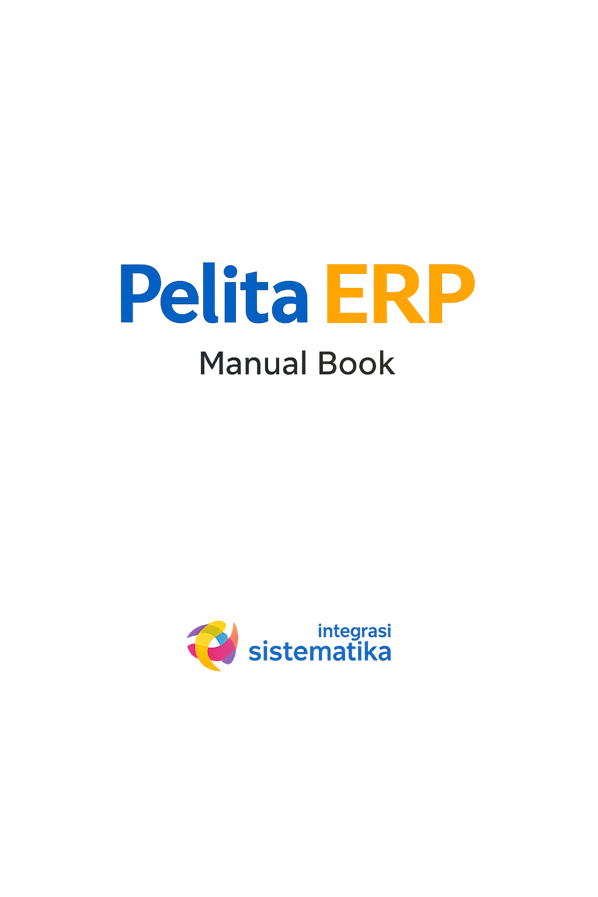
Table of Contents
Product Segment
Product Segment adalah kode identifikasi produk yang otomatis digunakan pada setiap produk baru di sistem iDempiere. Kode ini biasanya terdiri dari 2–3 karakter dan dikombinasikan dengan nomor urut produk.
Contoh Product Segment
| Kode Segment | Keterangan |
|---|---|
| 10 | Barang Jadi Kemeja |
| 20 | Bahan Baku Knitting |
| 21 | Bahan Baku Woven |
Tanpa Product Segment, sistem hanya menghasilkan nomor urut seperti 0001 atau 0002 yang tidak memberikan informasi mengenai jenis produk. Dengan Product Segment, user dapat langsung mengenali kategori produk hanya dari kode artikel yang ditampilkan.
Manfaat Product Segment
- Mempermudah Identifikasi Produk. Saat jumlah produk mencapai ratusan atau ribuan item, Product Segment membantu user mengenali produk dengan cepat. User cukup melihat awalan kode untuk mengetahui apakah produk tersebut bahan baku, barang setengah jadi, atau barang jadi.
- Menghindari Duplikasi Kode Antar Kategori. Tanpa adanya segment, produk dari kategori berbeda dapat memiliki nomor urut yang sama, misalnya 0001 untuk bahan baku dan 0001 untuk barang jadi. Dengan segment, setiap kode menjadi unik, seperti: RM-0001 dan FG-0001. Kedua kode tersebut berbeda dan tidak saling bertabrakan
- Mendukung Konsistensi Data. Segment yang ditentukan sejak awal implementasi membantu seluruh tim menggunakan pola penamaan yang sama. Dengan begitu, proses pencarian data dan pembuatan laporan menjadi lebih terstruktur dan konsisten.
Dalam satu segment, sistem dapat menampung beberapa tipe sekaligus. Jika perusahaan membutuhkan pengelompokan segment berdasarkan kategori tertentu, seperti jenis artikel bahan jadi, bahan baku, gramasi, benang, brand, dan kategori lainnya, lakukan pengaturan pada Menu Product Segment Type.
Sistem akan mengelompokkan kode artikel sesuai kategori yang ditentukan sehingga penyusunan kode artikel menjadi lebih rapi, konsisten, dan mudah dikelola.
Langkah Pengaturan Product Segment Type
- Buka menu SIS Product Segment Type
- Klik New
- Isi Field Search Key dan Name
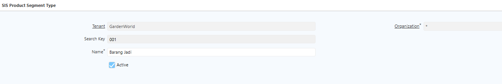
- Klik Save
Setelah pengelompokan segment berdasarkan kategori selesai dilakukan, lanjutkan konfigurasi pada menu Product Segment.
Langkah Pengaturan Product Segment di Sistem
- Buka Menu SIS Product Segment
- Klik New
- Isi field Search Key, Name dan Product Segment Type. Contoh 10 untuk Barang Jadi dan 59 untuk Brand Polo

- Klik Save
Setelah Product Segment selesai dikonfigurasi, langkah berikutnya adalah mengatur Item Type. Item Type berfungsi untuk menyusun kode artikel berdasarkan segment yang sudah dibuat.
Item Type Product
Item Type adalah konfigurasi penyusun kode artikel berdasarkan Product Segment yang telah dibuat sebelumnya.
Sistem akan membentuk kode artikel secara otomatis berdasarkan urutan segment pada Item Type.
Contoh Kode Artikel:
| Kode Artikel | Keterangan |
|---|---|
| 1015015971761200 | Barang Jadi Polo |
| 2192G2620000527S6000 | Bahan Baku Woven |
| 20010TR91200660ZP091 | Bahan Baku Knitting |

Konfigurasi Item Type
Langkah-Langkah Konfigurasi Item Type:
- Buka Menu SIS Item Type
- Klik New
- Isi field Search Key dan Name sesuai kebutuhan operasional

- Masuk ke Item Type Line. Pada bagian Item Type Line, terdapat dua jenis konfigurasi segment, yaitu:
- Sequence — Nomor urut yang di-generate otomatis oleh sistem.
- Static — Kode tetap pada artikel, contoh: 59 untuk Brand Polo, 28 untuk MClass Kemeja.
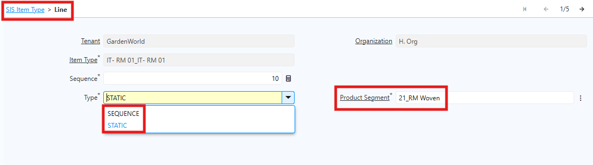
- Jika memilih tipe Sequence, tentukan jumlah digit nomor urut yang dibutuhkan (1, 2, 3, atau 4 digit). Field Digit Character akan muncul secara otomatis untuk mengatur jumlah digit tersebut. Nilai default Digit Character dari sistem adalah 3, dengan nilai minimal 1 — nilai 0 atau di bawahnya tidak diperbolehkan.
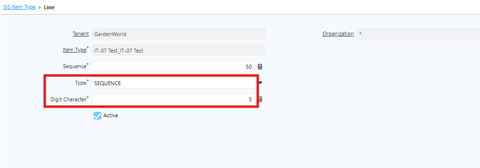
6. Klik SaveUrutan segment pada Item Type mengikuti standar kode perusahaan karena urutan tersebut menentukan hasil akhir kode artikel.
Setelah Item Type selesai dikonfigurasi, user dapat membuat artikel atau produk baru dengan menghubungkan segment yang telah diatur sebelumnya. Sistem kemudian akan menghasilkan kode artikel secara otomatis.
Implementasi Item Type di Product
Setelah konfigurasi Item Type selesai, langkah berikutnya adalah membuat produk menggunakan segment yang sudah ditentukan.
Implementasi Item Type di Product Category
Langkah selanjutnya adalah mengimplementasikan Item Type pada Product Category dengan cara sebagai berikut:
- Buka Menu Product Category
- Pada field Item Type, pilih Item Type yang telah dikonfigurasi sesuai kebutuhan.
- Klik Save untuk menyimpan konfigurasi.
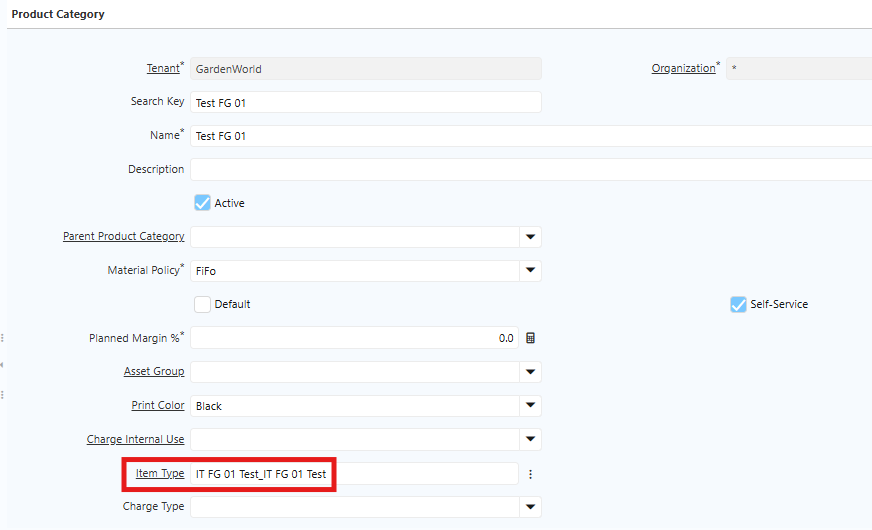
Langkah Pembuatan Produk Baru dengan Product Segment
- Buka Menu Product.
- Pada field Product Type, pilih SIS Template.
- Pada field Product Category, pilih Product Category yang telah dikonfigurasi, di mana Item Type sudah dikonfigurasi di level Product Category tersebut.
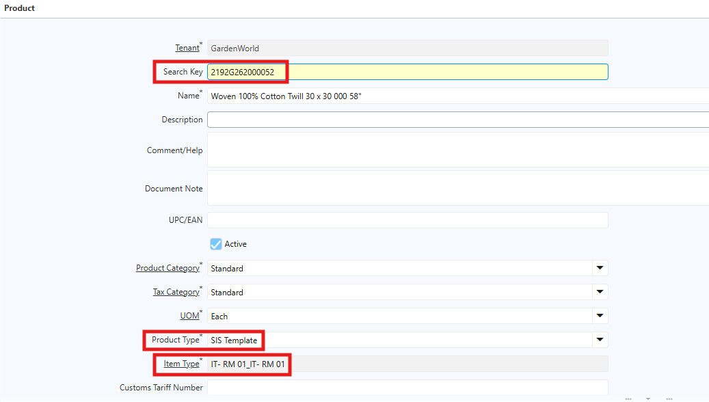
- Klik Save. Saat produk disimpan, sistem otomatis membuat Kode artikel dan Nama Artikel. Di sistem, kode artikel disebut sebagai Search Key. Nama artikel terbentuk dari gabungan nama masing-masing segment yang dipisahkan dengan spasi agar mudah dibaca.
Informasi segment yang telah dikonfigurasi akan muncul di header Product pada field Product Info. Field ini menampilkan informasi segment sesuai urutan yang dikonfigurasi di Item Type.
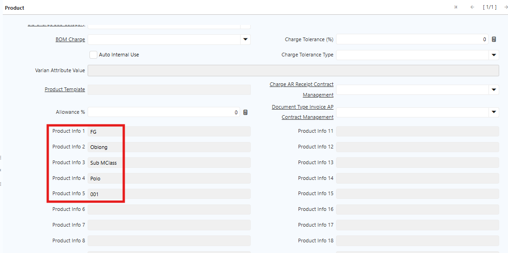
Apabila produk memiliki varian, user dapat mengatur varian tersebut pada menu Variant Attribute.
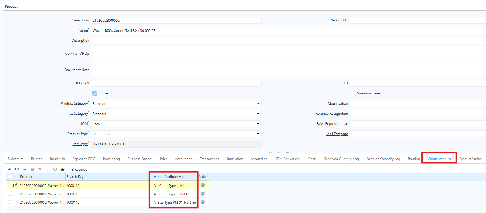
Setelah Variant Attribute selesai dikonfigurasi, user dapat menjalankan proses Generate Product Variant. Sistem akan otomatis membentuk kode artikel berdasarkan template Item Type yang telah dikonfigurasi, kemudian menambahkan kode varian sesuai atribut produk.
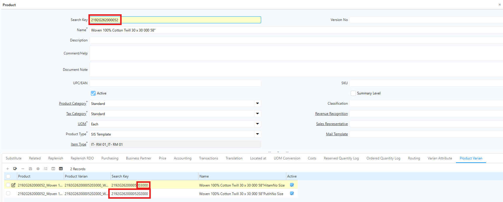
Product Template
Product template merupakan dasar yang digunakan untuk membuat suatu produk. Product template ini tidak hanya berlaku untuk produk Finished Goods, tetapi juga dapat digunakan untuk produk Semi Finished Goods dan Raw Material.
Untuk produk yang memiliki Bill of Material (BoM), kita tidak perlu mengatur varian attribute pada komponen BoM. Sistem akan mencari varian yang sesuai secara otomatis dari product template — dengan syarat varian yang digunakan pada Raw Material, Semi Finished Goods, dan Finished Goods adalah sama.
Apabila produk tidak menggunakan template, masukkan produk varian langsung sebagai komponen di BoM, dan konfigurasikan varian attribute secara detail sesuai penggunaannya.
Error: include
Cannot call function include(...) with arguments (...):
File D:\manual\pelita_manual_book\Prima Manual Book\Prima Manual Book\Konfigurasi Attribute Set Instance\Attribute Set Instance.md does not exist.
.include {Konfigurasi Attribute Set Instance/Attribute Set Instance.md}Fitur Product Varian
Sistem iDempiere menggunakan Varian Attribute untuk mengelola variasi produk. Dengan fitur ini, perusahaan dapat mengelola satu produk dalam berbagai varian, seperti warna dan ukuran. Fitur Product Varian dapat diterapkan pada semua artikel: Raw Material, Semi Finished Goods, dan Finished Goods.
Konfigurasi Sebelum Menentukan Product Varian
Sebelum membuat produk varian, lakukan tiga konfigurasi berikut:
Master Varian Attribute
Buat Master Varian Attribute terlebih dahulu sebelum menentukan produk varian. Berikut langkah-langkah untuk membuat Varian Attribute:
- Klik menu SIS Varian Attribute
- Isi field Name dengan nama varian yang akan digunakan.
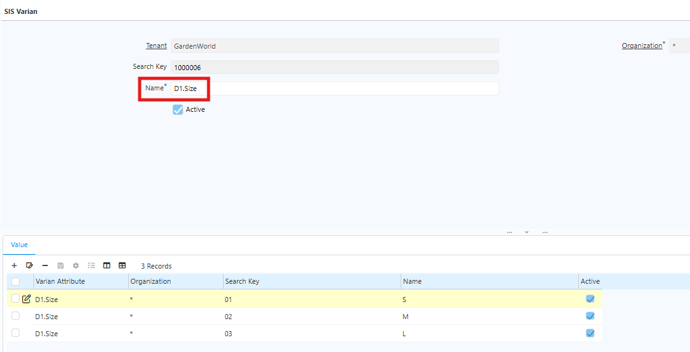
- Buka tab Value, lalu masukkan nama varian dan value sesuai kebutuhan. Contoh: Size S menggunakan prefiks 01. Penentuan varian pada produk disesuaikan dengan kebutuhan operasional perusahaan.

Product Type
Setelah Master Varian Attribute selesai, konfigurasikan Product Type dengan langkah berikut:
- Pada field Product Type, pilih SIS Template sebagai product template

- Buat product template secara berurutan, mulai dari artikel terkecil: Raw Material → Semi Finished Goods → Finished Goods. Pembuatan product template tidak boleh dimulai dari Finished Goods.
- Setelah product template selesai, tambahkan Varian Attribute pada product template untuk membentuk kombinasi varian. Satu produk dapat memiliki lebih dari satu Varian Attribute

Konfigurasi Sistem
Sistem menyediakan parameter SIS_VARIAN_ALLOW_UPDATE di System Configurator untuk menentukan data mana saja yang akan diperbarui saat Regenerate dijalankan. Berikut parameter yang perlu dikonfigurasi:
| Parameter | Keterangan |
|---|---|
| SIS_VARIAN_ALLOW_UPDATE_BOM | Bill of Material |
| SIS_VARIAN_ALLOW_UPDATE_PURCHASING | Purchasing |
| SIS_VARIAN_ALLOW_UPDATE_REPLENISH | Replenish |
| SIS_VARIAN_ALLOW_UPDATE_REPLENISHRDO | Replenish RDO |
| SIS_VARIAN_ALLOW_UPDATE_ROUTING | Routing |
| SIS_VARIAN_ALLOW_UPDATE_UOMCONVERSION | UoM Conversion |
Salah satu contoh Konfigurasi

Untuk Configured Value, pilih salah satu:
- Y → Data akan diperbarui secara otomatis saat proses Regenerate Product Variant dijalankan.
- N → Data tidak akan diperbarui saat proses Regenerate dijalankan.
Finalisasi Pembuatan Item/Artikel/Product
Berikut ini adalah langkah langkah dalam melakukan proses finalisasi pembuatan Item/Artikel/Product
Generate Product Varian
Setelah Product Template, Item Type, Attribute Set dan Varian Attribute selesai dikonfigurasi, jalankan fitur Generate Product Varian melalui langkah berikut:
- Buka menu Product.
- Klik ikon Setting (⚙).
- Jalankan fitur Generate Product Varian.

Sistem akan membuat produk varian secara otomatis berdasarkan kombinasi varian yang telah ditentukan, dan menampilkannya pada tab Product Varian. Produk varian yang terbentuk merupakan produk reguler dengan Product Type Item.
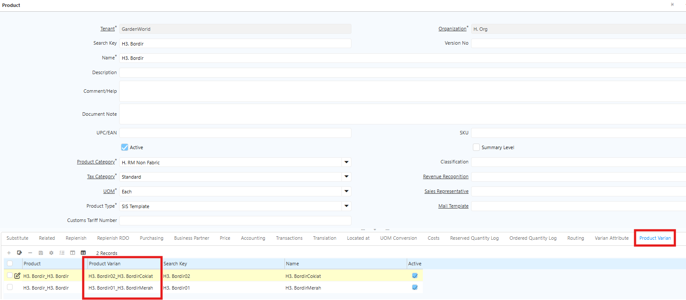
Untuk produk Semi Finished Goods dan Finished Goods yang menggunakan Bill of Material, pastikan BoM sudah dikonfigurasi dengan benar sebelum menjalankan Generate Product Varian. Struktur BoM pada product template akan otomatis disalin ke setiap produk varian yang dihasilkan.
Saat proses Generate dijalankan, sistem menyalin informasi berikut dari product template ke setiap product varian:
- Bill of Material
- Purchasing
- Routing
- Replenish
- Replenish RDO
- UoM Conversion
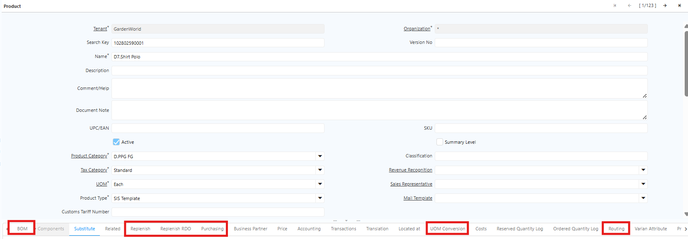
Distribusi komponen bahan di BoM pada setiap produk varian akan menyesuaikan attribute dan konfigurasi BoM yang telah diatur di level template.
Regenerate Product Varian
Regenerate Product Varian adalah proses memperbarui data pada produk varian berdasarkan perubahan yang dilakukan di product template. Apabila ada perubahan pada tab BoM, Purchasing, Routing, Replenish, Replenish RDO, atau UoM Conversion di product template, jalankan proses Regenerate agar perubahan tersebut otomatis diterapkan ke seluruh produk varian terkait.
Setelah Generate Product Varian pertama kali dijalankan, setiap produk varian akan memiliki konfigurasi Allow Update When Regenerate pada tab BoM, Purchasing, Routing, Replenish, Replenish RDO, dan UoM Conversion.

Gunakan konfigurasi ini untuk mengontrol produk varian mana yang perlu diperbarui saat Regenerate dijalankan, tanpa harus mengubah konfigurasi sistem:
- Centang (✔) Allow Update When Regenerate → Data pada tab terkait di produk varian tersebut akan diperbarui saat Regenerate dijalankan.
- Hapus centang (✘) Allow Update When Regenerate → Data pada tab terkait di produk varian tersebut tidak akan diperbarui saat Regenerate dijalankan.
Contoh penggunaan, jika ingin memperbarui BoM di semua produk varian kecuali satu varian tertentu, un-check/un-centang/un-thick Allow Update When Regenerate pada tab BoM di produk varian tersebut sebelum menjalankan Regenerate.
Jika ingin menambahkan raw material atau komponen hanya untuk varian tertentu, input atribut varian pada material baru satu per satu untuk setiap varian. Sistem tidak dapat menerima input beberapa varian yang sama secara bersamaan.
Contoh: Jika ingin menambahkan material Gula untuk varian Coffee dan Matcha, input komponen Gula untuk varian Coffee dan Matcha secara terpisah.

Ketentuan ini juga berlaku jika setiap varian memiliki komponen atau material dengan gramasi, komposisi, atau quantity yang berbeda. Input setiap varian secara terpisah sesuai detail masing-masing.
Unit of Measure (UoM)
Unit of Measure (UoM) adalah satuan pengukuran yang digunakan untuk menentukan kuantitas produk dalam setiap transaksi di iDempiere.
Dalam iDempiere, setiap produk memiliki satu Base UoM, yaitu satuan dasar dan terkecil yang menjadi acuan utama sistem untuk:
- Menyimpan saldo stok di database
- Menghitung harga pokok (costing)
- Menjadi referensi seluruh proses konversi satuan
UoM juga menentukan jumlah produk yang terlibat dalam transaksi. Ketika transaksi menggunakan satuan yang berbeda dari satuan dasar produk, sistem akan melakukan perhitungan berdasarkan konversi UoM yang telah ditentukan.
UoM Conversion
Unit of Measure (UoM) Conversion adalah mekanisme yang digunakan untuk mengonversi satu satuan pengukuran ke satuan lain untuk produk yang sama. Contohnya, produk dibeli dalam satuan karton (10 pcs), disimpan dalam satuan pcs, dan dikeluarkan juga dalam satuan pcs. Dalam kondisi ini, sistem harus memahami hubungan antar satuan tersebut.
UoM Conversion terdiri dari beberapa komponen utama:
- Base UoM, yaitu satuan dasar yang menjadi acuan utama, biasanya satuan terkecil seperti pcs, kg, atau meter.
- Alternate UoM, yaitu satuan lain yang digunakan dalam transaksi, seperti karton, lusin, atau dus.
- Conversion Factor, yaitu nilai pengali antar satuan. Contoh: 1 karton = 10 pcs, sehingga faktor konversinya adalah 10.
Setiap produk memiliki Base UoM sebagai referensi utama seluruh konversi. Sistem mendefinisikan konversi menggunakan multiply rate dan divide rate. Karena itu, Base UoM harus menjadi satuan terkecil dari seluruh skema konversi yang digunakan, dan nilai divide rate harus lebih besar atau sama dengan 1.

UoM Conversion diterapkan di Requisition, Purchase Order, dan Movement. Karena itu, pastikan konfigurasi UoM di level Product sudah selesai sebelum memulai transaksi di ketiga modul tersebut.
[Tim PSI merekomendasikan untuk menetapkan standarisasi UoM pada proses Movement, Requisition dan Purchasing dengan tujuan untuk meminimalkan potensi kesalahan input UoM serta memastikan akurasi dalam penentuan harga] Catatan
Implementasi di Requisition
Requisition
Di tahap requisition, user mengajukan kebutuhan barang. Fitur UoM Conversion memungkinkan user memasukkan permintaan dalam satuan yang lebih familiar, seperti karton atau pack. Sistem lalu otomatis mengonversi jumlah tersebut ke Base UoM (misalnya Pcs) untuk keperluan pengecekan stok dan perencanaan pengadaan.
Requisition Line
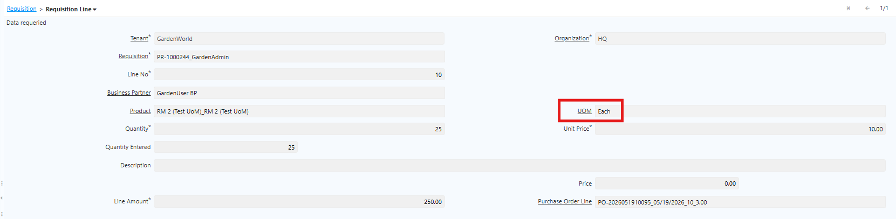
UoM pada requisition line terbentuk dari konversi Base UoM. Berikut field quantity dan harga yang perlu dipahami:
- Quantity — Menampilkan jumlah produk dalam satuan Base UoM.
- Quantity Entered — Menampilkan jumlah produk dalam satuan UoM Conversion. Contoh: Base UoM adalah each dan UoM Conversion adalah pack, di mana 1 pack = 10 each. Maka Quantity Entered mencerminkan jumlah dalam satuan pack.
Generate PO From Requisition
Setelah requisition diconfirm (complete), langkah berikutnya adalah Generate PO From Requisition. Proses ini menyalin data dari requisition — termasuk UoM dan quantity — ke dalam Purchase Order. Sistem kemudian menggunakan UoM yang telah dikonversi sebelumnya.
UoM yang digunakan di requisition dan purchase order sebenarnya bisa berbeda, namun disarankan untuk menyamakannya demi konsistensi data. Contoh: jika requisition menggunakan satuan pack, maka purchase order sebaiknya juga menggunakan pack.
Implementasi di Purchase Order
Setelah requisition dikonfirmasi, user membuat Purchase Order melalui proses “Generate PO From Requisition”. Sistem membaca requisition line yang memenuhi kriteria tertentu — seperti Warehouse dan Business Partner — lalu membuat Purchase Order secara otomatis.
Sistem mengambil data berikut dari dokumen Requisition ke header Purchase Order:
- Organization
- Date Promised
- Price List
- Warehouse
- Business Partner
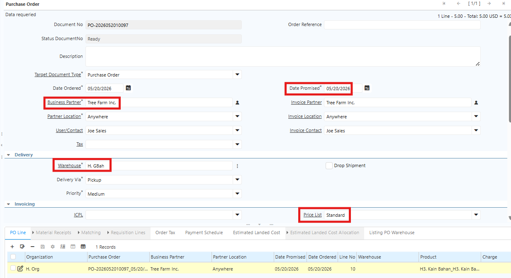
Purchase Order Line
Dalam Purchase Order, sistem menggunakan satuan pembelian yang telah disepakati dengan vendor, yang biasanya berbeda dari Base UoM. Sistem mencatat:
- Quantity dalam satuan UoM Conversion (misalnya karton)
- Harga per satuan UoM Conversion (misalnya Rp100.000/karton)
- Konversi ke Base UoM secara otomatis di latar belakang
Hal ini penting karena vendor umumnya memberikan harga dalam satuan karton atau dus, bukan per pcs.
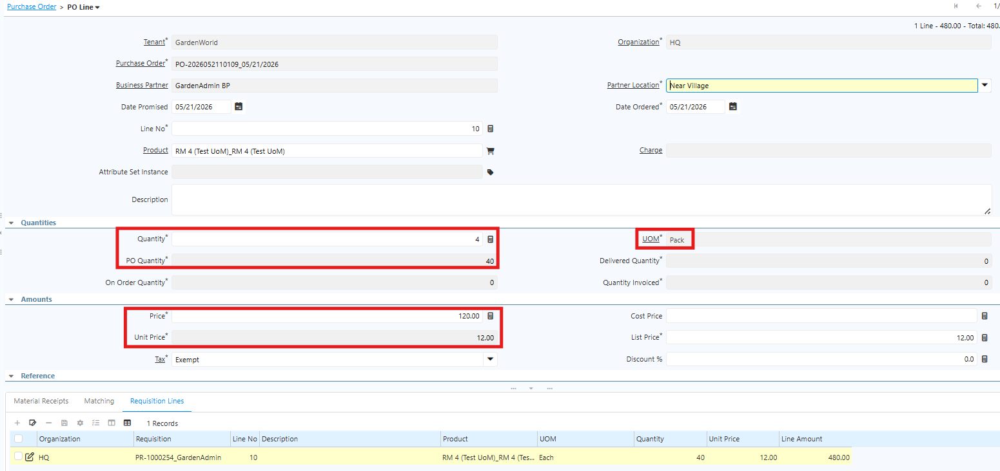
Berdasarkan data konversi tersebut, sistem menghitung unit cost dalam Base UoM. Contoh: harga Rp120.000 per karton dengan isi 10 pcs akan dikonversi menjadi Rp12.000 per pcs untuk keperluan valuasi inventori.
Berikut field pada Purchase Order line yang perlu dipahami:
- Qty Entered — Menampilkan jumlah produk dalam satuan UoM Conversion. Nilai ini otomatis menyesuaikan rate UoM Conversion.
- PO Quantity — Menampilkan jumlah produk dalam satuan Base UoM. Nilai ini otomatis menyesuaikan rate UoM Conversion.
- Unit Price — Menampilkan harga produk per satuan Base UoM, mengikuti price yang telah dikonfigurasi di level Business Partner.
- Price — Menampilkan harga produk per satuan UoM Conversion, dihitung berdasarkan rate UoM Conversion.
Penentuan Price
Price pada Purchase Order ditentukan berdasarkan vendor atau business partner yang dikontrak. Konfigurasi price dilakukan di level Business Partner, karena setiap business partner dapat memiliki price list yang berbeda.
Jika produk tidak memiliki vendor yang dikontrak, sistem menggunakan Price List yang telah dikonfigurasi sebelumnya. Penentuan dasar harga yang digunakan mengikuti kebijakan perusahaan.
Implementasi di Movement
Penerimaan Barang & Konfigurasi UoM
Setelah produk jadi diterima, perpindahan stok (antar gudang, antar lokasi) dicatat melalui Inventory Move. Sistem mencatat quantity berdasarkan konfigurasi UoM yang diatur di level Product. Konfigurasi ini tersedia di tab “UoM Conversion” pada halaman Product.
Field “Movement”

Field Movement menentukan bagaimana sistem mencatat quantity saat penerimaan barang:
- Jika Movement dicentang (✓) — Sistem mencatat quantity dalam satuan UoM Conversion (hasil konversi dari Base UoM).
- Jika Movement tidak dicentang — Sistem mencatat quantity langsung menggunakan satuan Base UoM.
Implementasi UoM Conversion di Movement

UoM yang digunakan di level Movement mengikuti konfigurasi UoM Conversion pada level Product. Jika field Is Movement dicentang, sistem akan mencatat transaksi movement dalam satuan UoM Conversion, termasuk quantity yang digunakan. Berikut field pada movement line yang perlu dipahami:
- Quantity — Menampilkan jumlah produk dalam satuan UoM Conversion.
- Target Quantity — Menampilkan jumlah produk dalam satuan Base UoM. Contoh: jika Base UoM adalah each dan UoM Conversion adalah pack, maka 1 pack = 10 each.
- UoM — Menampilkan UoM sesuai konfigurasi di level Product.
Contoh: Movement Menggunakan Base UoM
Konfigurasi di level Product
Di level Movement

Karena field Movement tidak dicentang, sistem mencatat movement dalam satuan Base UoM.
Routing
Routing adalah konfigurasi yang menentukan alur proses suatu produk, mulai dari bahan baku, tahapan produksi, hingga menjadi produk jadi. Routing juga mengatur lokasi setiap proses dijalankan dan lokasi penyimpanan hasil proses tersebut.
Tanpa routing, proses produksi tetap dapat berjalan, tetapi perpindahan stok tidak tercatat secara otomatis dan alurnya menjadi tidak terstruktur. Kondisi ini dapat menyebabkan bahan baku tersimpan di lokasi yang salah dan hasil produksi tidak tercatat dengan benar.
Pengaturan Warehouse & Locator
Sebelum membuat routing, pastikan konfigurasi Warehouse dan Locator sudah sesuai.
Warehouse merepresentasikan area penyimpanan fisik produk atau gudang. Di dalam warehouse terdapat struktur lokasi yang disebut Locator untuk menentukan posisi penyimpanan secara lebih detail, seperti rak, baris, atau bin.
Langkah Pengaturan Warehouse & Locator
- Buka Menu Warehouse & Locator
- Klik New
- Isi data Warehouse:
- Nama Warehouse, contoh: WH-Bahan Baku
- Alamat Warehouse, contoh: Jakarta
Di dalam warehouse terdapat line bernama Locator. Locator harus dibuat terlebih dahulu sebelum digunakan pada routing. Ikuti langkah dibawah untuk mengatur locator:
- Klik tab Line Locator
- Klik New
- Isi nama locator gudang
- Isi field X, Y, Z sesuai kebutuhan operasional:
- X untuk kolom rak
- Y untuk baris rak
- Z untuk slot dalam satu baris
- Centang Default untuk locator utama gudang
- Isi field berikut sesuai locator yang digunakan
- Locator Stock
- Locator Pre Manufacture
- Locator Post Manufacture
- Reservation Locator
- Klik Save
Jika satu produk diproduksi di lebih dari satu gudang, misalnya Jakarta dan Surabaya, buat konfigurasi BoM (Bill of Material) terpisah sesuai lokasi produksi masing-masing. Routing nantinya akan mengikuti konfigurasi BoM tersebut.
Jenis Action Routing
Routing memiliki beberapa jenis action yang digunakan untuk menentukan alur perpindahan barang.
| Action | Fungsi |
|---|---|
| Buy | Proses pengadaan material melalui pembelian |
| Manufacture | Proses memproduksi artikel |
| Pull From | Menarik barang dari gudang sebelumnya (alur mundur) |
| Push To | Mengirim barang ke gudang berikutnya (alur maju) |
Penggunaan Action Berdasarkan Jenis Produk
- Raw Material dan Semi Finished Goods. Menggunakan action Pull From, dimulai dari proses pembelian atau proses sebelumnya hingga ke area pre-production.
- Finished Goods. Menggunakan action Push To dengan tujuan gudang induk atau gudang penjualan.
Jenis Operation Routing
Routing memiliki tiga jenis operation:
| Operation Type | Fungsi |
|---|---|
| Take from stock | Mengambil langsung dari stok yang tersedia |
| Take from stock Trigger another rules | Mengambil dari stok, lalu menjalankan aturan lain jika stok tidak mencukupi |
| Trigger another rules | Langsung menjalankan aturan lain tanpa pengecekan stok |
Langkah Pengaturan Routing di Sistem
- Buka Menu SIS Routing
- Klik New
- Isi Field Search Key dan Nama pada Header
- Simpan header terlebih dahulu sebelum menambahkan line routing
- Klik tab Line
- Isi setiap field sesuai konfigurasi berikut:
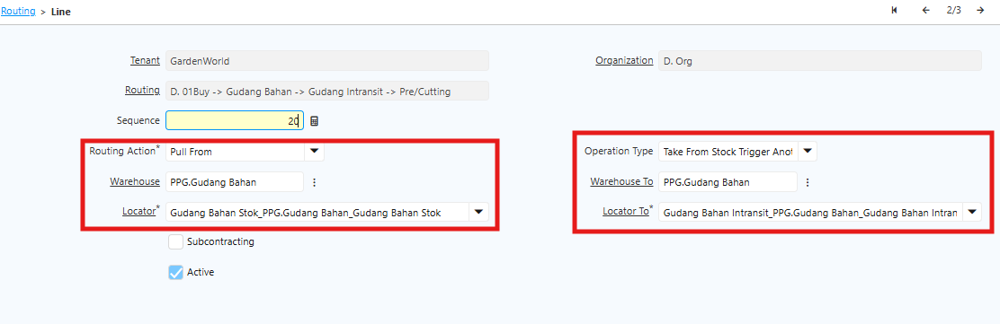
Berikut field yang harus dikonfigurasi:
| Field | Keterangan |
|---|---|
| Routing Action | Aksi yang dijalankan sistem pada tahap tertentu |
| Warehouse | Gudang asal material atau komponen |
| Locator | Lokasi pengambilan material atau komponen |
| Operation Type | Jenis operasi yang menentukan logika proses |
| Warehouse To | Gudang tujuan hasil produksi |
| Locator To | Lokasi penyimpanan hasil produksi |
- Ulangi untuk setiap tahapan proses dan pastikan Line No berurutan
- Simpan setiap line sebelum menambahkan ke line berikutnya
- Klik Save
Implementasi Routing
Setiap jenis produk, seperti Raw Material, Semi Finished Goods, dan Finished Goods, umumnya memiliki routing yang berbeda karena proses produksinya dilakukan di warehouse yang berbeda.
Sebelum menjalankan produksi, lakukan konfigurasi routing pada level Product Category. Pastikan routing setiap produk sudah sesuai dengan alur produksi yang berlaku.
Satu routing dapat digunakan untuk beberapa produk selama proses produksi dan perpindahan barang menggunakan warehouse serta locator yang sama.
Langkah Implementasi Routing di Product Category
- Buka Menu Product Category

- Pada Tab Routing, lakukan konfigurasi sesuai dengan alur produksi.
- Klik Save
Routing juga dapat dikonfigurasi langsung pada level Product. Berikut langkah implementasi routing di Product:
- Buka Menu Product

- Pada Tab Routing, konfigurasi sesuai dengan alur produksi.
- Klik Save
Field “Copy Routing”
Field Copy Routing berfungsi untuk menyalin routing yang telah dikonfigurasi di level Product Category ke produk-produk yang menggunakan kategori tersebut. Jika Product Category belum memiliki konfigurasi routing, user dapat menambahkan routing terlebih dahulu, kemudian menyalinnya ke produk yang sudah ada (existing).
Ikuti langkah berikut untuk menjalankan Copy Routing di Product Category:
- Buka menu Product Category
- Pada Tab Routing, lakukan konfigurasi sesuai dengan alur produksi.
- Klik tombol Copy Routing
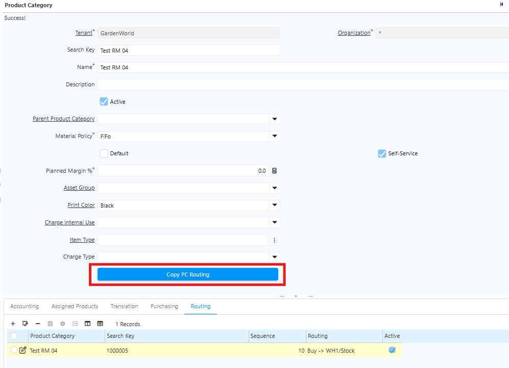
- Klik ok
- Klik save
Di belakang layar, sistem memperbarui routing pada seluruh produk yang menggunakan Product Category tersebut. Namun, jika produk sudah memiliki konfigurasi routing sebelumnya, sistem mempertahankan routing yang ada dan tidak menimpanya.
Catatan: Copy Routing hanya berfungsi untuk menyalin, bukan memperbarui. Produk yang sudah memiliki routing tidak akan ter-update meskipun Copy Routing dijalankan.
Field Copy PC Routing memiliki pilihan Overwrite dengan ketentuan berikut:
- Jika Overwrite dicentang — Sistem menghapus routing yang ada di product, kemudian menyalin konfigurasi routing dari Product Category ke product tersebut.
- Jika Overwrite tidak dicentang (default) — Sistem mempertahankan routing yang sudah ada di product dan tidak menyalin konfigurasi routing dari Product Category.
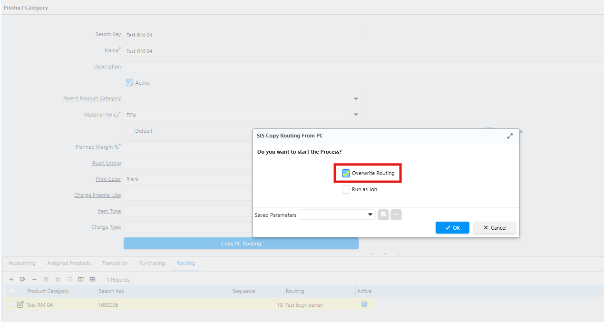
Manufacturing Order
Manufacturing Order adalah dokumen perintah produksi yang terhubung langsung dengan routing.
Saat manufacturing order dibuat, sistem akan membaca routing dan otomatis menyiapkan seluruh tahapan operasi sesuai urutan proses produksi.
Ketika Production Order Planning dibuat, sistem otomatis menghasilkan manufacturing order berdasarkan urutan operasi yang sudah dikonfigurasi. Dengan routing yang tepat:
- Perpindahan stok tidak perlu dilakukan secara manual.
- Lokasi barang dapat dipantau secara real-time.
- Sistem mencatat seluruh perpindahan produk secara otomatis.
- Laporan produksi menjadi lebih akurat karena setiap proses tercatat di sistem.
Bill of Material
Bill of Material (BoM) adalah struktur daftar komponen atau bahan yang digunakan untuk memproduksi suatu produk. BoM digunakan pada Manufacturing dan Production untuk mendukung proses produksi.
Bill of Material berfungsi untuk:
- Menentukan komponen penyusun produk
- Menghitung kebutuhan bahan baku
- Mendukung proses produksi
- Menghitung biaya produksi
Satu produk dapat memiliki lebih dari satu BoM sesuai kebutuhan produksi.
Konfigurasi Bill of Material
Beberapa pengaturan yang perlu dikonfigurasi pada BoM:
- Type BoM
- Manufacturing Produt → Produksi dilakukan secara inhouse oleh perusahaan
- Subcontracting → Produksi dilakukan di luar perusahaan melalui vendor
- Component. Komponen atau material yang digunakan dalam proses produksi.
- BoM Reference. BoM referensi yang digunakan untuk artikel Semi Finished Goods yang memiliki struktur BoM dan komponen tersendiri.
- Valid from. Periode mulai berlakunya BoM untuk produk tersebut.
Contoh Bill of Material
| Finished Goods | Komponen | Qty |
|---|---|---|
| Kemeja | Kain Cutting | 2 |
| Kemeja | Label | 1 |
| Kemeja | Kancing | 4 |
Artinya, untuk memproduksi 1 pcs Kemeja dibutuhkan:
- 2 pcs Kain Cutting
- 1 pcs Label
- 4 pcs Kancing
Manufacturing Order
Manufacturing Order adalah dokumen proses produksi untuk menghasilkan barang jadi maupun barang setengah jadi. Manufacturing Order merupakan bagian dari proses Production Order Planning (POP).
Urutan Manufacturing Order mengikuti struktur Semi Finished Goods terkecil berdasarkan hierarki BoM.
Tab pada Manufacturing Order
- Manufacturing Order Line. Berisi daftar kebutuhan bahan baku yang digunakan dalam produksi.
- Movement/Inventory Move. Dokumen perpindahan material sebagai permintaan bahan produksi. Dokumen ini bukan surat jalan.
- Requisition. Dokumen permohonan pembelian material. Requisition hanya muncul jika stok material tidak mencukupi. Jika stok tersedia, proses dapat langsung dilanjutkan ke tahap movement.
- Production. Digunakan untuk menjalankan proses produksi artikel.
- Childs. Berisi Child Manufacturing Order yang terbentuk dari komponen Semi Finished Goods.
- Production Report Quantity. Digunakan untuk mencatat hasil produksi, baik produk baik maupun produk defect.
Child Manufacturing Order
Satu Manufacturing Order dapat memiliki beberapa Child MO apabila dalam BoM terdapat komponen Semi Finished Goods.
Proses produksi tidak dapat dilanjutkan jika material pada Child Manufacturing Order belum tersedia.
Production Order Planning
Production Order Planning (POP) adalah dasar perencanaan produksi yang digunakan untuk menentukan produk yang akan diproduksi.
Dalam satu POP, user dapat memproduksi beberapa produk atau beberapa line sekaligus. POP mengacu pada master data produk dan routing. Maka dari itu, routing harus dikonfigurasi terlebih dahulu sebelum membuat POP.
Fungsi Production Order Planning
Dalam satu POP line, sistem dapat menghasilkan beberapa Manufacturing Order tergantung jumlah dan jenis produk.
POP juga berfungsi untuk:
- Menghitung kebutuhan bahan baku
- Menyiapkan inventory movement
- Menjadi dasar penarikan material dari gudang ke area produksi
Langkah Production Order Planning di Sistem
- Buka menu SIS Production Order Planning
- Masuk ke Tab Line
- Input:
- Produk yang akan diproduksi
- Quantity produksi
- BoM yang digunakan
- Jalankan proses SIS Generate POP BoM. Sistem akan menampilkan struktur BoM produk tersebut.
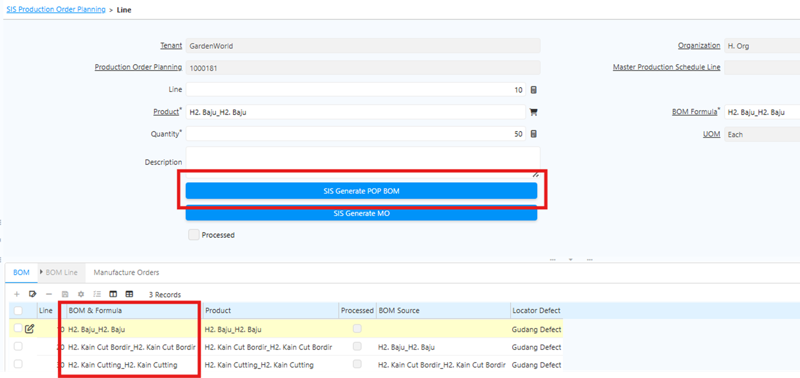
5. Klik SIS Generate MO. Sistem akan membuat Manufacturing Order secara otomatis.
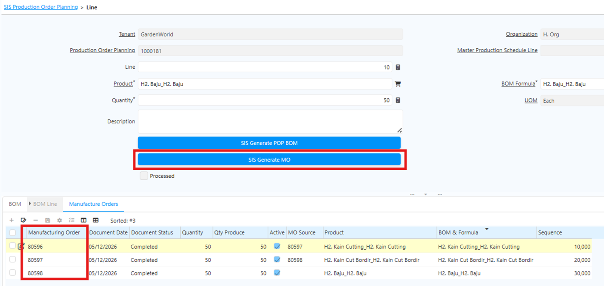
- Masuk ke menu Manufacturing Order. Setelah proses Generate MO selesai, sistem otomatis membuat dokumen berikut:
- Back Order
- Movement
- Requisition
- Production
- Child
- Production Report Quantity
Dokumen Requisition hanya muncul jika stok material tidak mencukupi.

- Lakukan proses requisition untuk komponen raw material yang dibutuhkan. Alur proses:
- Requisition Complete
- Purchase Order Complete
- Material Receipt
- Klik Tab Movement dan lakukan movement sesuai urutan proses
- Setelah movement selesai dan stok tersedia, jalankan proses produksi pada tab Production Report Quantity:
- Isi quantity produksi
- Jika terdapat produk defect, isi quantity defect
- Centang field Defect untuk produk defect
Produk defect akan diproses movement manual ke locator sesuai konfigurasi pada BoM.
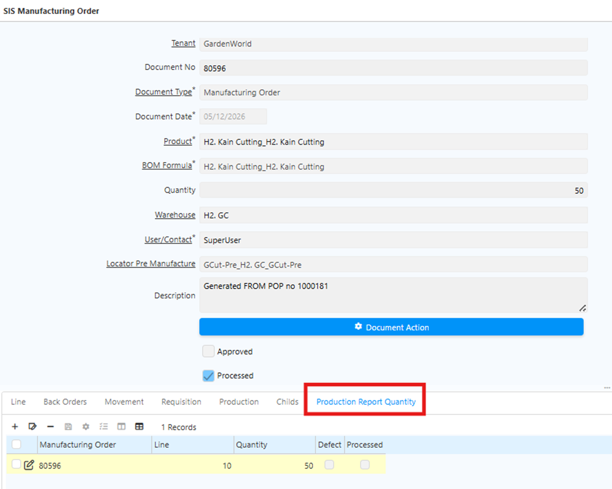
- Setelah quantity ditentukan, lakukan Complete Document MO. Sistem akan menjalankan proses production secara otomatis di belakang layar dan mengkonsumsi Raw Material dan Semi Finished Goods
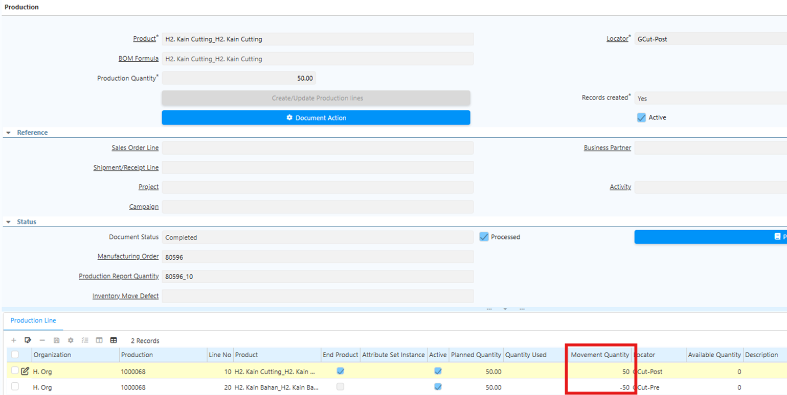
- Setelah produk finished goods selesai diproduksi, klik Complete pada dokumen POP.
Catatan: Dokumen POP hanya dapat di-complete jika seluruh dokumen Requisition, Purchase Order, dan Manufacturing Order sudah berstatus Complete. Jika masih terdapat dokumen yang outstanding atau belum diproses, sistem akan menampilkan pesan error dan dokumen POP tidak dapat di-complete.
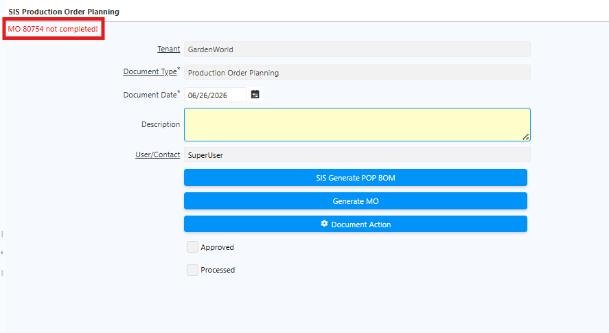
Dokumen Manufacturing Order (MO), Movement, dan Requisition sudah memuat informasi POP yang bersangkutan. Selain itu, user dapat melakukan pencarian Movement berdasarkan nomor POP melalui fitur Search, sehingga tim gudang dapat memfilter POP mana yang sudah atau belum diproses dengan mudah.
Berikut contoh tampilan dokumen MO dan Movement yang sudah memuat informasi POP dan POP Line terkait:
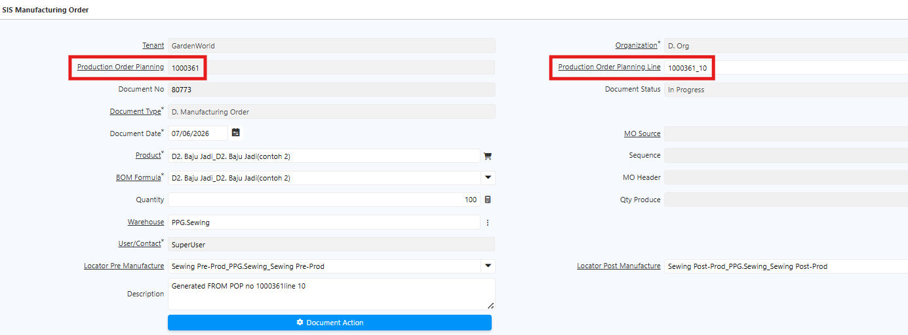
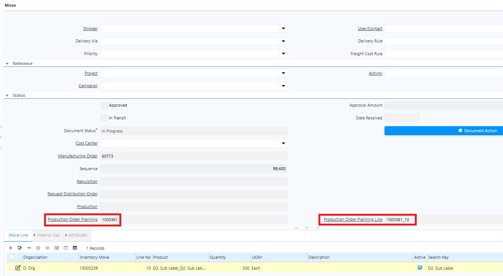
Di header Production Order Planning, terdapat tombol SIS Generate POP BoM dan Generate MO. Kedua tombol ini memungkinkan user men-generate BoM dan MO untuk seluruh line dalam satu POP sekaligus, tanpa perlu melakukan generate satu per satu.
SIS Generate POP BoM
Ikuti langkah berikut untuk men-generate BoM pada seluruh line POP:
- Buka menu Production Order Planning.
- Pilih dokumen yang akan diproses.
- Masuk ke header Production Order Planning.
- Klik tombol SIS Generate POP BoM.
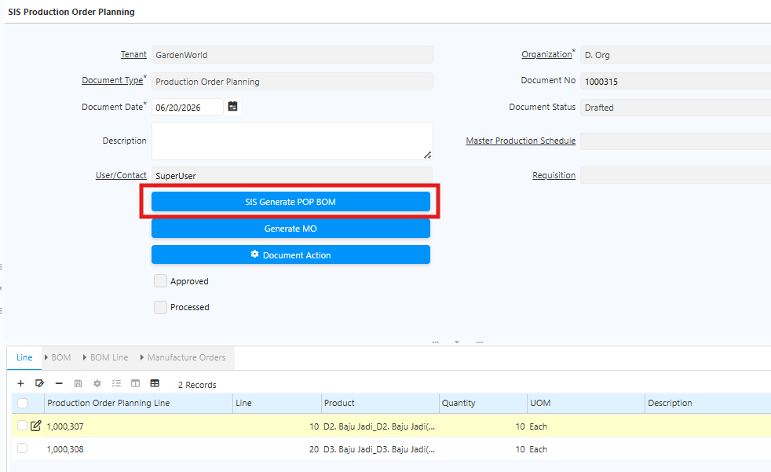
- Klik ok.
Sistem otomatis men-generate BoM pada seluruh line POP tersebut.
Generate MO
Ikuti langkah berikut untuk men-generate Manufacturing Order (MO) pada seluruh line POP:
- Buka menu Production Order Planning.
- Pilih dokumen yang akan diproses.
- Masuk ke header Production Order Planning.
- Klik tombol Generate MO.
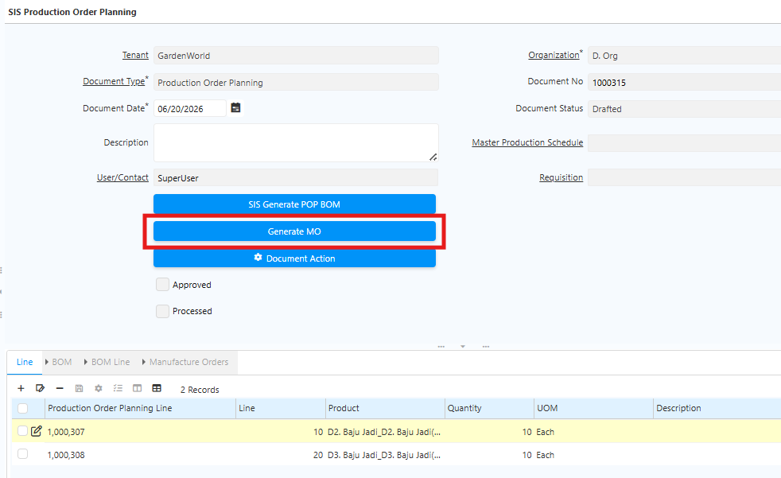
- Klik OK.
Sistem otomatis men-generate MO pada seluruh line POP tersebut.
Generate Listing Document POP
Fitur Generate Listing Document POP digunakan untuk mengekspor seluruh dokumen POP — mulai dari Requisition, Purchase Order, Material Receipt, hingga jurnal Rate Variance — dalam format Excel. Dokumen yang dihasilkan memuat informasi quantity dan status dokumen di setiap tahapan produksi.
Ikuti langkah berikut untuk mengekspor dokumen POP:
- Buka menu SIS Production Order Planning.
- Pilih dokumen yang akan diproses.
- Klik ikon Setting (⚙).
- Klik Generate Listing Document POP.
- Pilih document yang akan diproses berdasarkan document status.
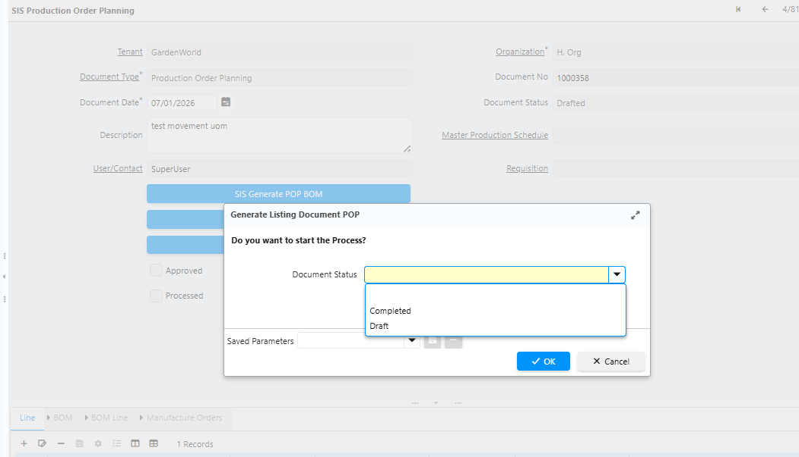
- Klik OK
- Sistem menampilkan dokumen dalam format Excel.
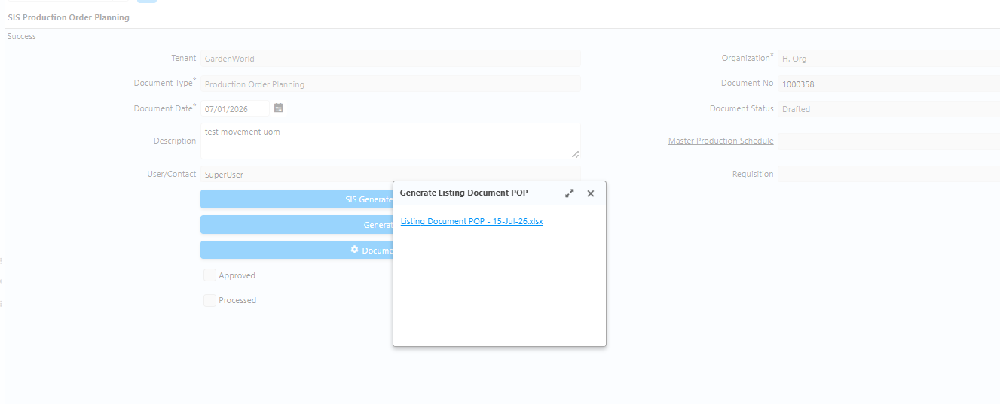
- Klik dokumen tersebut, kemudian klik Download.
Dokumen yang dihasilkan terfilter berdasarkan Document Status yang dikonfigurasi. Contoh: jika filter Document Status diset Complete, maka hasil generate hanya menampilkan dokumen berstatus Complete. Ketentuan yang sama berlaku untuk status lainnya seperti Draft, In Progress, dan Invalid.
Jika field Document Status dikosongkan, sistem menampilkan seluruh dokumen tanpa filter, mencakup informasi quantity dan komponen artikel yang digunakan dalam proses produksi beserta jurnal transaksi terkait, meliputi:
- Purchase Order (PO)
- Material Receipt (MR)
- Invoice
- Matched Invoice
- Material Movement
- Production
Production Order Planning Subcon
Subcon atau CMT adalah ketika salah satu komponen Finished Goods diproduksi di luar perusahaan oleh vendor.
Dalam proses ini:
- Perusahaan mengirim material ke vendor
- Vendor memproduksi barang setengah jadi atau barang jadi
- Perusahaan melakukan proses pembelian hasil produksi vendor melalui:
- Requisition
- Purchase Order
- Material Receipt
Mekanisme POP Subcon
Jika Finished Goods memiliki komponen subcon, maka Manufacturing Order yang terbentuk hanya satu, yaitu untuk Finished Goods.
Namun, ketika Purchase Order untuk produk subcon selesai diproses, sistem dapat otomatis membuat POP baru untuk Semi Finished Goods yang masih diproduksi secara inhouse.
Setelah produksi Semi Finished Goods selesai dan stok tersedia di warehouse, proses produksi Finished Goods dapat dilanjutkan.
Langkah POP Subcon di Sistem
- Buka menu SIS Production Order Planning
- Masuk ke Tab Line
- Input:
- Produk yang akan diproduksi
- Quantity produksi
- BoM yang digunakan
- Jalankan proses SIS Generate POP BoM

- Klik SIS Generate MO

6. Masuk ke menu Manufacturing Order. Setelah proses Generate MO selesai, sistem otomatis membuat dokumen berikut Back Order, Movement, Requisition, Production, Child dan Production Report Quantity.
- Lakukan proses Requisition untuk material subcon. Alur proses:
- Requisition Complete
- Purchase Order Complete
- Material Receipt
Sistem akan membuat POP baru untuk Semi Finished Goods yang diproduksi secara inhouse.
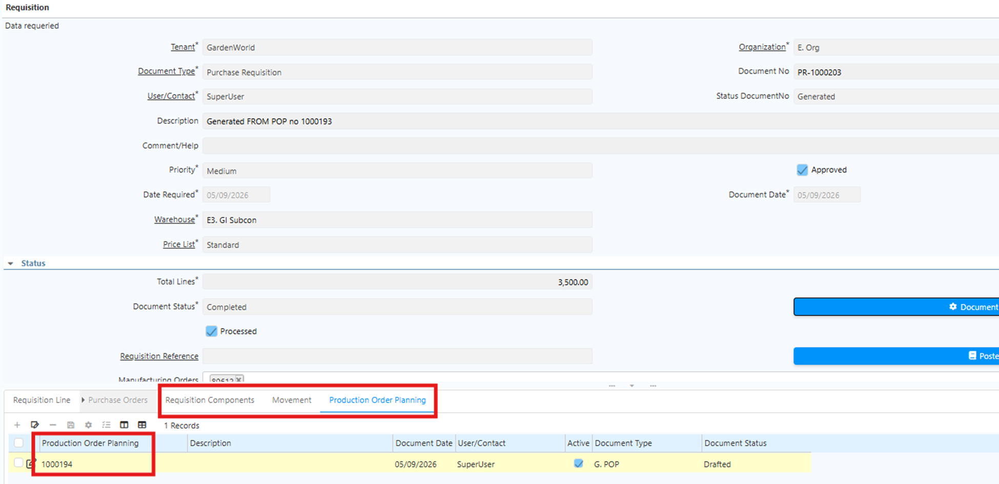
- Jalankan proses produksi Semi Finished Goods hingga selesai
- Setelah Semi Finished Goods tersedia di Warehouse, lakukan Movement sesuai urutan proses
- Klik tab Movement dan lakukan movement sesuai urutan
- Setelah stok tersedia, jalankan proses produksi pada tab Production Report Quantity:
- Isi quantity produksi
- Isi quantity defect, jika ada
- Centang field Defect untuk produk defect
Produk defect akan diproses movement manual ke locator sesuai konfigurasi BoM.
- Setelah quantity ditentukan, lakukan Complete Document MO. Sistem akan menjalankan proses production secara otomatis dan mengkonsumsi:
- Raw Material
- Semi Finished Goods
Pelita POP Visual Data
Pelita POP Visual Data adalah fitur visualisasi yang menampilkan setiap tahapan Production Order Planning (POP) — mulai dari penentuan artikel yang akan diproduksi hingga artikel selesai diproduksi. Fitur ini memudahkan pemantauan progress produksi sekaligus memungkinkan generate dokumen di masing-masing tahapan.
Langkah Akses Pelita POP Visual Data
- Buka menu Pelita POP Visual Data
- Input nomor POP di field POP Document No
- Input Line No POP
- Input Manufacture Order
- Klik Visual It
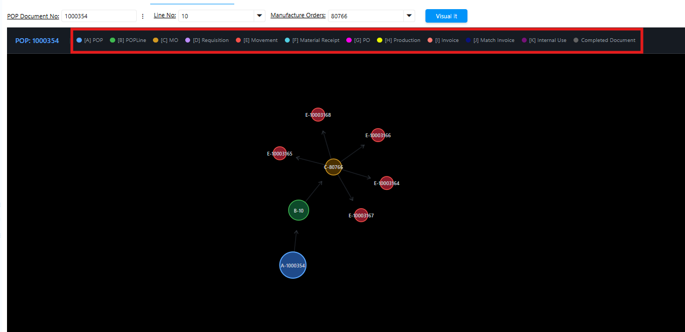
Sistem menampilkan visualisasi Production Order Planning berdasarkan Manufacturing Order (MO) yang dipilih. Setiap tahapan produksi dibedakan menggunakan kodefikasi A–J dengan warna yang berbeda, sehingga progress produksi dapat dipantau secara langsung.
Ketentuan Visualisasi
Berikut ketentuan perubahan warna pada visualisasi:
- Abu-abu — Dokumen sudah di-complete (berlaku untuk Movement, MO, Requisition, PO, dan MR).
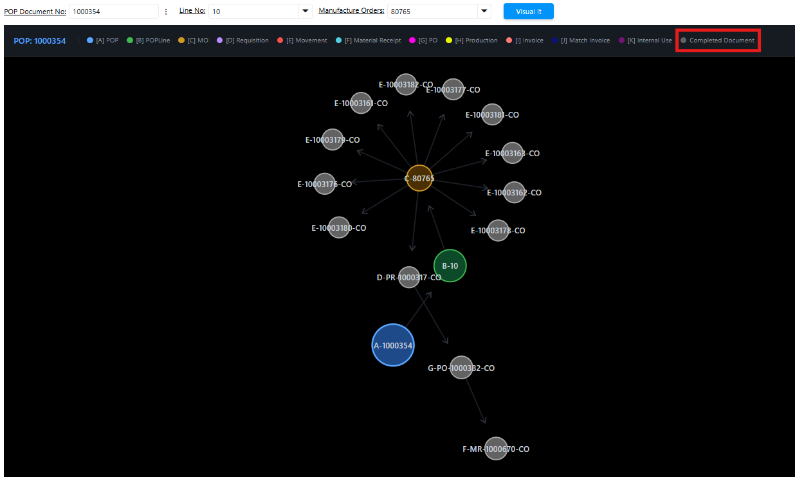
- Warna sesuai konfigurasi — Dokumen belum di-complete (berlaku untuk Movement, MO, Requisition, PO, dan MR).
Untuk dokumen selain Movement, Requisition, Purchase Order, dan Material Receipt, warna pada visualisasi tidak berubah — baik saat status dokumen masih draft maupun sudah complete.
Berikut interaksi yang tersedia pada visualisasi:
- Klik satu kali pada salah satu tahapan untuk melihat detail, termasuk dokumen masuk (incoming) dan dokumen keluar (outgoing).
- Klik dua kali pada node untuk membuka menu terkait. Contoh: klik dua kali pada node A akan membuka menu POP.
- Sorot salah satu tahapan untuk melihat informasi dokumen beserta keterkaitannya.
Informasi Warehouse pada Manufacturing Order (MO)
Setiap Manufacturing Order (MO) kini memuat informasi warehouse produksi untuk masing-masing artikel. Dengan informasi ini, user dapat memantau tahapan produksi yang sudah selesai dan yang masih outstanding, serta mengetahui artikel sudah diproduksi sampai tahap mana — apakah masih di cutting, sewing, atau finishing.
Berikut contoh implementasi informasi warehouse pada masing-masing MO:
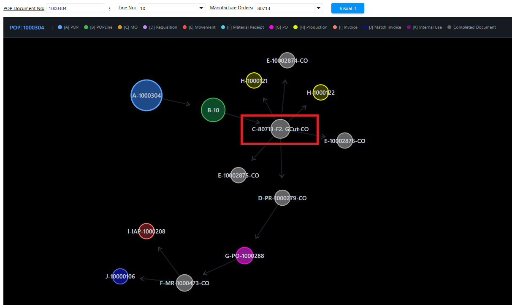
Master Production Schedule
Master Production Schedule (MPS) adalah rencana produksi utama yang menentukan produk apa yang akan diproduksi, kapan diproduksi dan berapa jumlah yang diproduksi.
Master Production Schedule (MPS) ini menjadi penghubung antara forecast permintaan, sales order, kapasitas produksi dan kebutuhan material.
Fungsi adanya MPS di sistem iDempiere adalah untuk:
- Menjadwalkan produksi finished goods
- Menentukan target produksi per periode
- Mengontrol kapasitas produksi
- Menghindari overstock maupun kekurangan stock
Konfigurasi Sebelum Proses MPS
Sebelum menjalankan proses Master Production Schedule, pastikan beberapa hal berikut sudah disiapkan:
- Template CSV sebagai sumber data produksi
- Product yang akan dijadwalkan produksinya
- Date schedule sebagai acuan tanggal rencana produksi
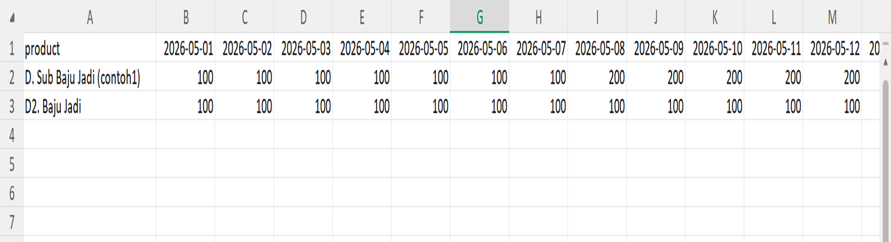
Konfigurasi Document MPS
Sebelum menjalankan proses Generate MPS, lakukan konfigurasi Document Type MPS terlebih dahulu.
- Nama Document Type MPS
- Document Base MPS
- Document Type POP, dibedakan menjadi 2, yaitu:
- POP 1 → Non System 01
- POP 2 → System 01

Langkah Proses Master Production Schedule
- Buka menu Generate MPS
- Pilih organisasi yang akan digunakan
- Pilih file CSV sebagai sumber data produksi
- Tentukan nilai Distribute (%) untuk mengatur distribusi produksi antara:
- Non System 01
- System 01
Sisa persentase dari distribusi Non System 01 akan otomatis dialokasikan ke System 01.
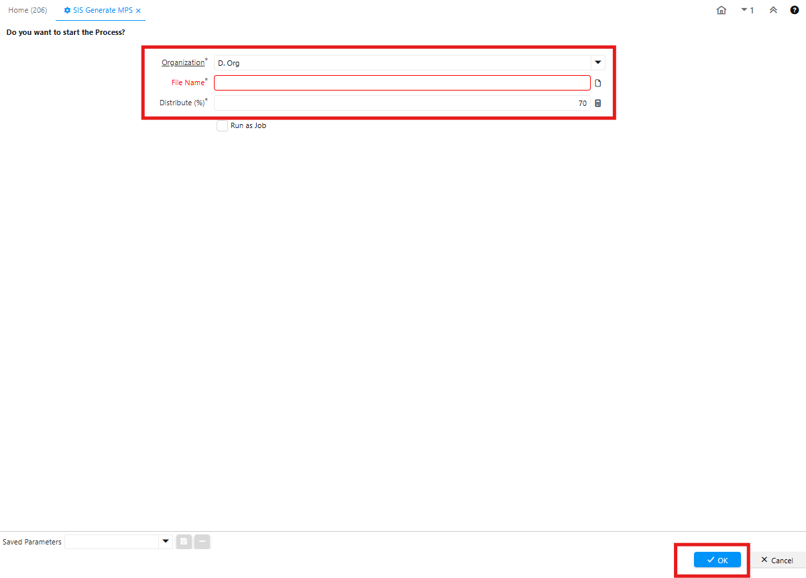
5. Jalankan proses Generate MPS.
- Setelah proses berhasil, sistem akan membentuk dokumen MPS berdasarkan:
- Tanggal produksi
- Quantity produk
- Mapping data pada file CSV
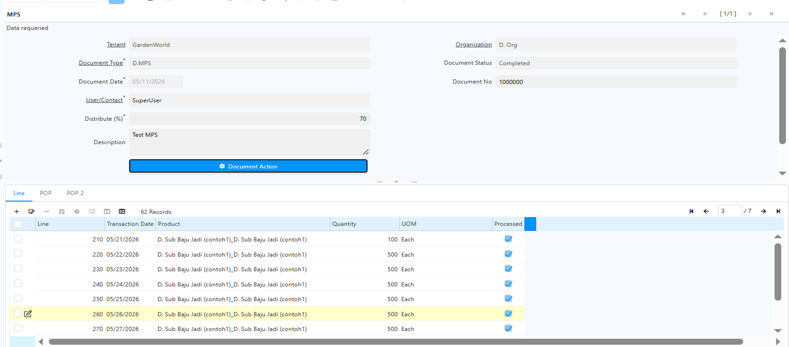
7. Setelah dokumen MPS di-Complete, sistem otomatis membentuk: POP 1 dan POP 2

- Document Date pada POP yang terbentuk akan mengikuti Date Schedule yang telah ditentukan sebelumnya.
- Dokumen POP yang terbentuk memiliki status Draft dan dapat di-Complete secara manual sesuai kebutuhan
Proses MPS akan menghasilkan dua dokumen Production Order Planning (POP):
- POP 1 → untuk pendistribusian Non System 01
- POP 2 → untuk pendistribusian System 01
Request Distribution Order
Request Distribution Order (RDO) adalah instrumen pengendalian distribusi yang digunakan untuk memonitor, mengalokasikan, dan mendistribusikan barang non-produksi ke warehouse tujuan secara terstruktur dan dapat ditelusuri.
Konfigurasi Request Distribution Order (RDO)
Sebelum proses RDO dijalankan, pastikan konfigurasi berikut sudah diselesaikan:
- Warehouse dan Locator tujuan sudah didefinisikan dengan jelas.
- Document Type untuk delivery dan receipt sudah dikonfigurasi agar sistem dapat mencatat pergerakan barang secara akurat.
- Produk yang akan didistribusikan sudah diinput melalui menu Product Access menggunakan fitur Generate Product.
- Field Organization wajib diisi pada seluruh transaksi operasional untuk menjaga integritas data.
Konfigurasi Document Type RDO
Pada konfigurasi Document Type RDO, terdapat beberapa field utama yang wajib diisi:
| Field | Keterangan |
|---|---|
| Document type delivery | Digunakan untuk mencatat barang keluar dari warehouse asal |
| Document type receipt | Digunakan untuk mencatat penerimaan barang di warehouse tujuan |
| Warehouse intransit | Warehouse transit selama proses distribusi |
| Locator Tujuan | Lokasi penerimaan barang |
| Product Access | Wajib dicentang agar filter produk berjalan sesuai konfigurasi |
Alur Proses Request Distribution Order di Sistem
- Lakukan assign produk melalui fitur Generate Product pada menu Product Access.
- Buka menu SIS RDO
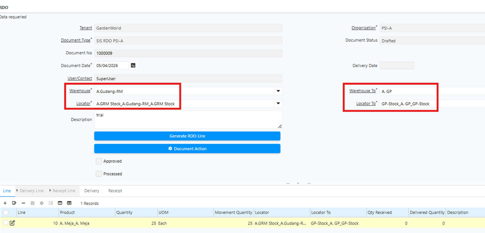
3. Jalankan proses Generate RDO Line untuk menampilkan daftar produk yang sudah dikonfigurasi.
- Pilih produk yang akan didistribusikan sesuai kebutuhan.

Validasi quantity distribusi.
Klik Complete Document untuk menyelesaikan proses RDO.
Setelah dokumen di-complete, sistem akan otomatis membuat dokumen:
- Inventory Move Delivery
- Inventory Move Receipt
Kedua dokumen tersebut akan terbentuk dalam status Draft dan perlu diproses lebih lanjut sesuai alur operasional.
Back Order Pada RDO
Jika quantity distribusi yang diproses lebih kecil dari quantity permintaan, sistem akan otomatis membuat Back Order untuk sisa quantity yang belum terpenuhi.
Dengan mekanisme ini, proses distribusi tetap dapat dilanjutkan tanpa harus membuat dokumen baru secara manual.
ICPL
ICPL atau Price List adalah fitur untuk mengelola dan menyimpan informasi harga jual maupun harga beli produk. Dengan ICPL, perusahaan dapat menetapkan harga yang berbeda untuk setiap pelanggan atau vendor dalam periode tertentu.
ICPL menjadi dasar perhitungan harga pada setiap transaksi. Sistem hanya dapat mengisi harga otomatis pada Sales Order maupun Purchase Order jika price list sudah dikonfigurasi dengan benar.
Manfaat ICPL
- Menstandarkan harga produk secara terpusat sehingga user tidak perlu menginput harga secara manual pada setiap transaksi.
- Mendukung beberapa jenis harga, seperti retail, grosir, dan distributor dalam satu sistem.
- Menyimpan histori perubahan harga sebagai versi baru.
- Menghitung diskon atau markup secara otomatis berdasarkan produk atau kategori.
Pengaturan ICPL Base
Membuat ICPL Base
Ikuti langkah berikut untuk membuat ICPL Base:
- Buka Menu SIS ICPL
- Klik New
- Isi field pada header:
- ICPL Type — Opsional, tentukan jenis harga yang digunakan seperti online, offline, intercompany, atau stock opname.
- Price Include Tax — Tentukan apakah harga sudah termasuk pajak.
- Valid From — Tentukan tanggal mulai berlaku harga.
- Sales Transaction — Centang jika ICPL digunakan untuk transaksi penjualan.
- Set Lucky Number — Opsional, aktifkan jika diperlukan untuk perhitungan tambahan.
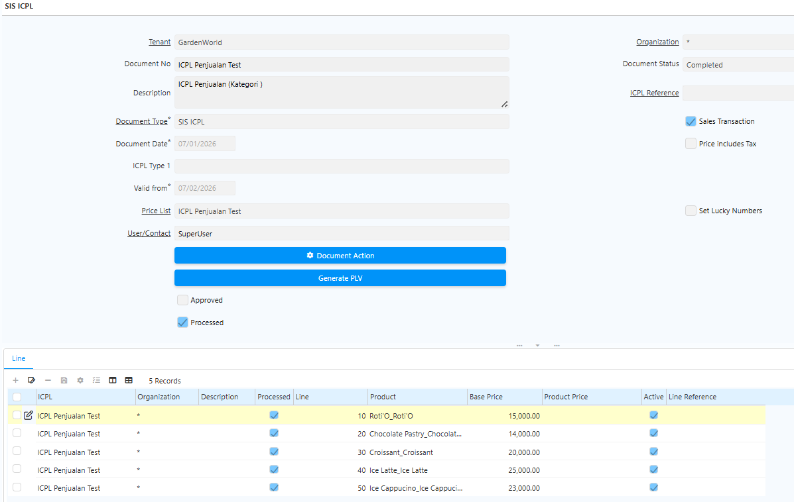
- Klik Save
Menambahkan Produk ke ICPL Base
Setelah header ICPL tersimpan, tambahkan daftar harga produk melalui tab Line.
- Buka tab Line
- Klik tombol New
- Pilih Product
- Input Base Price produk
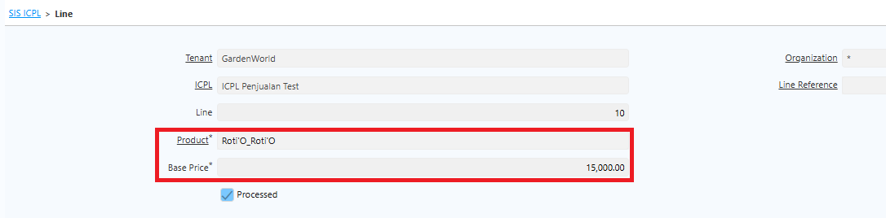
- Klik save
- Ulangi langkah di atas untuk seluruh produk
- Klik complete
- Jalankan proses Generate PLV (Price List Version).
- Sistem akan menyimpan data header dan menyiapkan versi harga.
ICPL With Reference
ICPL With Reference digunakan untuk membuat versi harga baru berdasarkan ICPL Base yang sudah ada. Sistem menghitung harga secara otomatis berdasarkan referensi yang dipilih.
ICPL with Reference dengan Product Category
ICPL With Reference dengan Product Category digunakan ketika satu ICPL memuat beberapa produk dengan kategori berbeda yang memiliki perhitungan harga yang berbeda pula. ICPL Base mencakup semua produk dengan base price masing-masing tanpa filter kategori. Sedangkan di ICPL Reference, perhitungan harga dapat dibedakan per kategori — misalnya produk makanan ditambah Rp2.000 dan produk minuman ditambah Rp3.000.
Ikuti langkah berikut untuk mengkonfigurasi perhitungan harga per kategori:
- Buka menu SIS ICPL.
- Klik New.
- Isi seluruh field pada header.
- Pada field ICPL Reference, pilih ICPL Base yang akan dijadikan acuan.
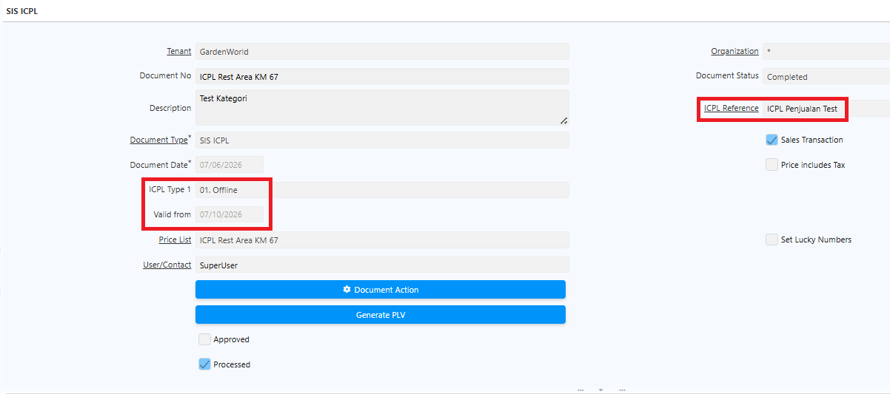
- Klik Save.
- Masuk ke tab Criteria.
- Input Product Category yang akan diproses.
- Pada field Calculate Type, tentukan metode perhitungan: Add (+), Subtract (-), Multiply ()*, atau Divide (/).
- Pada field Rate, tentukan rate untuk product category tersebut.
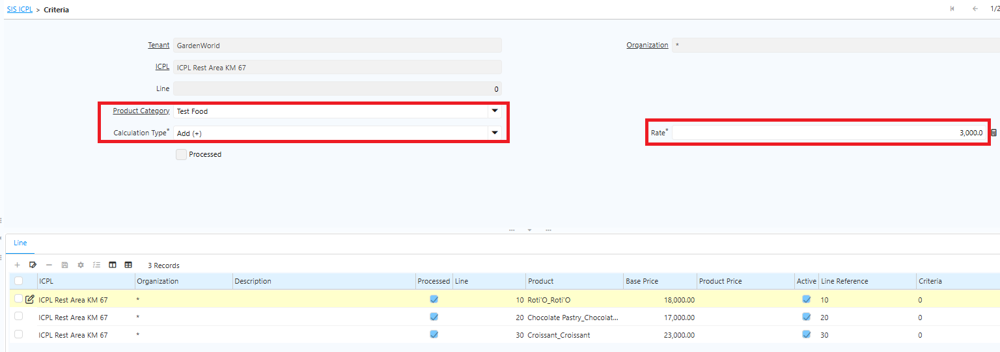
- Klik complete
- Jalankan proses Generate PLV (Price List Version).
- Sistem menampilkan produk beserta harga yang dihitung otomatis berdasarkan harga ICPL Base + Rate, dengan perbedaan perhitungan price sesuai masing-masing kategori.
ICPL with Reference Tanpa Product Category
Jika penentuan harga berlaku untuk semua produk tanpa filter kategori — misalnya berdasarkan ICPL Type seperti Online, Offline, Stock Opname, atau Inter Company — konfigurasi rate tidak perlu dibedakan per kategori.
Ikuti langkah berikut untuk mengkonfigurasi ICPL Reference tanpa filter Product Category:
- Buka menu SIS ICPL.
- Klik New.
- Isi seluruh field pada header.
- Pada field ICPL Reference, pilih ICPL Base yang akan dijadikan acuan.
- Klik Save.
- Masuk ke tab Criteria.
- Pada field Calculate Type, tentukan metode perhitungan: Add (+), Subtract (-), Multiply ()*, atau Divide (/).
- Pada field Rate, tentukan rate untuk produk tersebut.
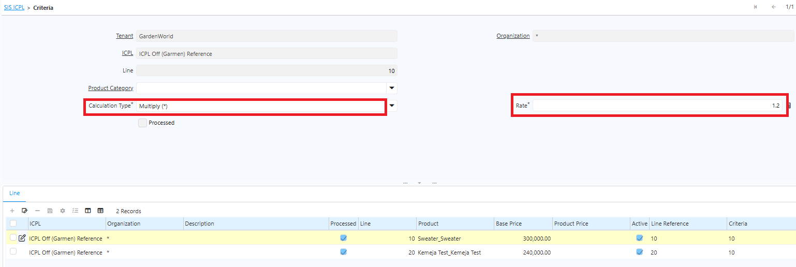
- Klik complete
- Jalankan proses Generate PLV (Price List Version).
- Sistem menampilkan produk beserta harga yang dihitung otomatis berdasarkan harga ICPL Base + Rate.
Tanpa filter Product Category, seluruh produk di ICPL Base dikalkulasi dengan rate yang sama sehingga perhitungan harga setiap produk seragam.
User tidak perlu membuat ICPL Line secara manual karena sistem otomatis membuat data saat proses Generate PLV dijalankan. ICPL With Reference juga dapat digunakan sebagai referensi untuk ICPL turunan lainnya.
Update ICPL
Perubahan ICPL hanya dapat dilakukan melalui menu ICPL Update. User tidak dapat mengubah langsung dokumen ICPL dengan status Complete. Hanya ICPL Base yang dapat diperbarui.
Langkah Update ICPL
- Buka menu SIS ICPL Update
- Pilih ICPL Base yang akan diperbarui.
- Input tanggal baru pada field Valid From

- Masuk ke tab Line
- Pilih Produk
- Input Price terbaru
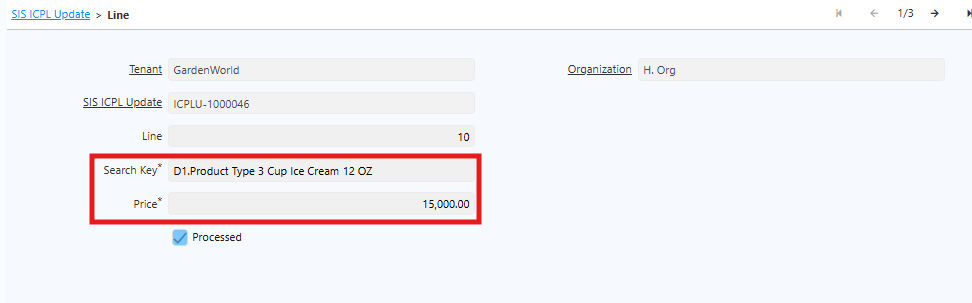
- Klik save
- Klik complete
Saat ICPL Base diperbarui, seluruh ICPL turunan akan ikut ter-update secara otomatis.
Implementasi ICPL
ICPL Pada Warehouse
Setiap warehouse atau outlet harus memiliki ICPL yang digunakan dalam transaksi. Satu warehouse dapat memiliki 4 jenis ICPL:
- ICPL Online
- ICPL Offline
- ICPL Intercompany
- ICPL Stock Opname

Jika terdapat perubahan ICPL atau Price List pada warehouse, lakukan perubahan langsung melalui field ICPL 1–4. Setiap perubahan akan tercatat secara otomatis di tab Listing ICPL for Warehouse, yang berfungsi menampilkan histori perubahan ICPL pada warehouse tersebut. Berikut contoh perubahan ICPL untuk warehouse:
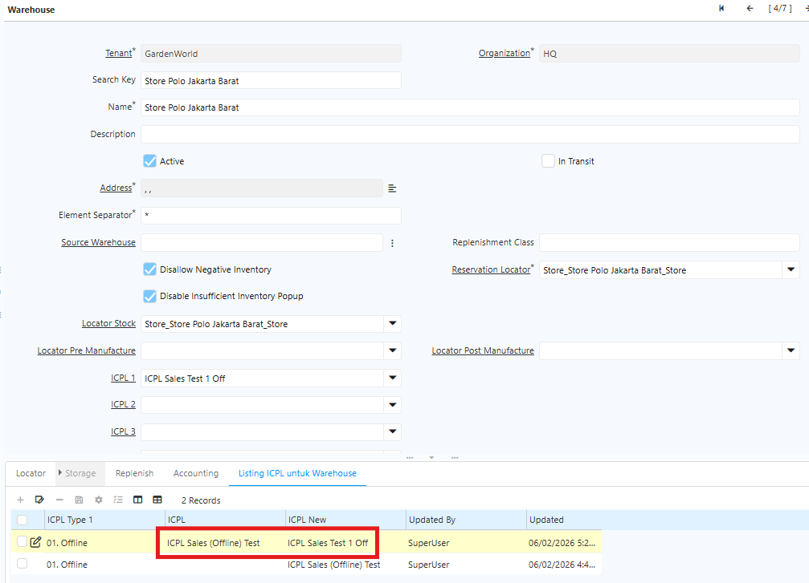
ICPL Pada Purchase Order
ICPL dapat digunakan untuk menentukan harga pembelian dari vendor. Setiap vendor dapat memiliki price list yang berbeda sesuai kesepakatan harga atau kontrak pembelian. Satu vendor hanya dapat menggunakan satu ICPL Purchase.
Setup ICPL Purchase pada Vendor
- Buka menu Business Partner
- Masuk ke bagian Vendor Information.
- Isi field Purchase Price List dengan ICPL yang digunakan.
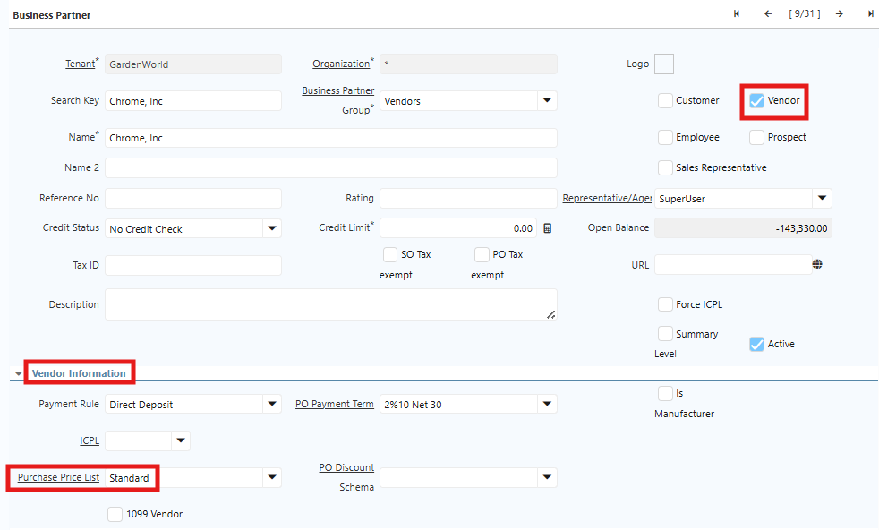
4. Klik save
Setelah ICPL Purchase dikonfigurasi, sistem akan otomatis menampilkan harga pada transaksi Purchase Order sesuai price list vendor yang dipilih.
Cost of Production
Cost of Production adalah biaya yang dikeluarkan untuk memproduksi barang. Biaya ini mencakup bahan baku, tenaga kerja, dan biaya overhead produksi.
Di iDempiere, Cost of Production terdiri dari tiga elemen utama:
- Biaya Bahan Baku Langsung. Biaya bahan yang langsung digunakan dalam proses produksi, seperti tepung, kain, atau bahan utama lainnya.
- Biaya Tenaga Kerja Langsung. Biaya tenaga kerja yang langsung mengerjakan proses produksi, seperti upah operator mesin.
- Biaya Overhead Pabrik. Biaya tidak langsung yang mendukung proses produksi, seperti listrik pabrik dan depresiasi mesin.
Metode Perhitungan Biaya di iDempiere
Standar Cost
Standard Cost menggunakan biaya standar yang ditetapkan di awal periode. Sistem akan membandingkan biaya aktual dengan biaya standar dan mencatat selisihnya sebagai variance.
Metode ini membantu perusahaan:
- Mengontrol biaya produksi
- Mempermudah evaluasi selisih biaya
- Menjaga kestabilan nilai persediaan
Average Cost
Average Cost menghitung ulang biaya rata-rata setiap kali terjadi transaksi masuk.
Nilai persediaan akan selalu mengikuti rata-rata harga terbaru. Metode ini cocok digunakan untuk:
- Raw Material
- Produk dengan perubahan harga yang tidak terlalu signifikan
FIFO (First In First Out)
FIFO menggunakan stok berdasarkan urutan barang masuk pertama. Sistem akan menghitung harga pokok penjualan menggunakan biaya dari lot yang pertama kali diterima. Metode ini cocok digunakan untuk:
- Produk dengan masa simpan tertentu
- Barang yang harus keluar berdasarkan urutan penerimaan
Variance
Variance adalah selisih antara biaya standar dan biaya aktual. Perusahaan dapat menggunakan variance untuk:
- Evaluasi biaya produksi
- Penyesuaian standard costing
- Analisis efisiensi produksi
Komponen variance dapat mencakup:
- FOH (Factory Overhead)
- Biaya tambahan lainnya
Konfigurasi Costing
Sebelum melakukan transaksi, tentukan costing method untuk setiap kategori produk. User dapat melakukan konfigurasi di Product Category. Ikuti langkah berikut untuk mengatur costing pada Product Category:
- Buka menu Product Category
- Klik New
- Isi field Name, contoh Raw Material
- Isi field Material Policy

- Masuk ke tab Accounting
- Klik Accounting Schema
- Pilih Costing Method dan Costing Level sesuai kebijakan perusahaan
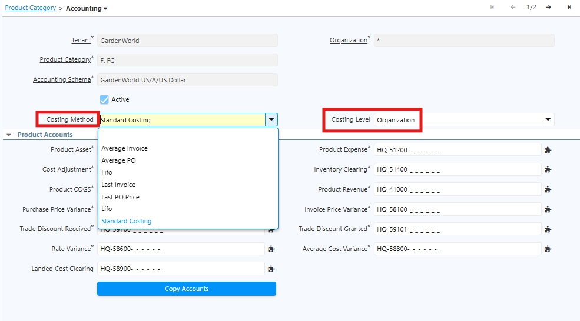
- Klik Save
Implementasi Penggunaan Costing
Finished Goods & Semi Finished Goods
Tim PSI merekomendasikan penggunaan Standard Costing untuk Finished Goods dan Semi Finished Goods. Metode ini:
- Sudah menjadi praktik umum di sistem manufaktur
- Mengacu pada blueprint costing perusahaan
- Membantu menjaga akurasi laporan keuangan
- Mempermudah kontrol dan evaluasi biaya produksi
Raw Material
Tim PSI merekomendasikan penggunaan Average Cost untuk Raw Material.
Metode ini dinilai cukup karena perubahan harga bahan baku biasanya tidak menghasilkan selisih biaya yang signifikan.
Sub-Contracting
Proses subcontracting dapat menggunakan:
- Standard Costing
- Average Costing
Pemilihan metode mengikuti kebijakan perusahaan. Pada proses subcontracting:
- Sistem akan membuat movement dari warehouse internal ke warehouse subcontractor.
- Sistem juga akan membuat jurnal internal use secara otomatis di belakang proses transaksi.
Tujuan Penggunaan Standar Costing
Penggunaan Standard Costing membantu perusahaan:
- Mengendalikan koreksi HPP atau costing
- Mengurangi kesalahan operasional
- Mempermudah proses monitoring biaya
Dengan minimnya koreksi costing, perusahaan dapat menyusun laporan keuangan dalam kurun waktu yang lebih cepat dan lebih stabil.
Cost Adjustment
Cost Adjustment adalah proses penyesuaian nilai valuasi produk atau barang yang sudah tercatat di sistem. Penyesuaian ini dilakukan karena:
- Perbedaan harga
- Kesalahan pencatatan sebelumnya
Cost Adjustment tidak melakukan revaluasi terhadap transaksi historis. Sistem hanya akan menggunakan nilai cost baru untuk transaksi berjalan dan transaksi berikutnya.
Ketentuan Costing Method
Costing Method tidak boleh diubah setelah digunakan dalam transaksi. Pembatasan ini bertujuan untuk:
- Menjaga konsistensi data
- Menjaga integritas transaksi
- Menghindari ketidaksesuaian laporan costing
Jika perusahaan perlu menggunakan costing method yang berbeda, buat product atau article baru lalu arahkan ke Product Category yang sesuai.
Langkah Cost Adjustment di Sistem
Ikuti langkah berikut untuk melakukan Cost Adjustment:
- Buka menu Cost Adjustment
- Klik New
- Pilih Costing Method pada produk
- Pilih Movement Date

- Masuk ke tab Cost Adjustment Line
- Pilih produk yang akan disesuaikan
- Input nilai harga baru pada field New Cost Price
- Input Charge

- Klik save
- Klik complete
Cost Adjustment pada Batch/Lot
Jika terjadi kesalahan harga pada level Batch atau Lot, lakukan penyesuaian cost average per Batch atau Lot.
Sistem akan menghitung harga rata-rata berdasarkan harga beli material terakhir pada masing-masing Batch atau Lot
Metode ini membantu menjaga akurasi nilai persediaan pada setiap Batch atau Lot.
Penanganan Kesalahan Harga pada Purchase Order
Jika terdapat kesalahan harga pada material yang sudah diproses melalui Purchase Order, perusahaan dapat menyelesaikannya menggunakan:
- Credit Note
- Return Material
Proses penyelesaian mengikuti kebijakan perusahaan.
- Jika perusahaan menggunakan Credit Note, tim accounting menentukan akun yang digunakan untuk penyesuaian.
- Jika stock masih tersedia, lakukan proses return material kepada vendor
- Jika material sudah digunakan dalam proses produksi, lakukan adjustment minus untuk menambah stok sesuai kondisi existing saat ini
Proses ini membantu menjaga kesesuaian nilai costing dan persediaan di sistem.
Purchase Price Contract
Purchase Price Contract adalah mekanisme untuk menetapkan harga pembelian yang telah disepakati antara perusahaan dan Business Partner (vendor) untuk produk tertentu dalam periode waktu tertentu.
Mekanisme ini membantu perusahaan:
- Menjaga konsistensi harga pembelian
- Mengontrol harga sesuai perjanjian
- Menghindari perubahan harga pasar yang tidak sesuai kontrak
Konfigurasi Awal Purchase Price Contract
Sebelum membuat Purchase Price Contract, lakukan konfigurasi ICPL terlebih dahulu:
- Setup Price List di ICPL.
- Tentukan price list produk yang akan digunakan untuk setiap Business Partner.
- Pastikan setiap Business Partner sudah memiliki konfigurasi ICPL sebelum proses Purchase Price Contract dijalankan.
ICPL menjadi dasar harga yang digunakan dalam Purchase Price Contract.
Langkah Pembuatan Purchase Price Contract
Ikuti langkah berikut untuk membuat Purchase Price Contract:
- Buka menu SIS Purchase Price Contract
- Input nama Business Partner
- Input Valid From dan Valid To - tentukan periode waktu kontrak berjalan
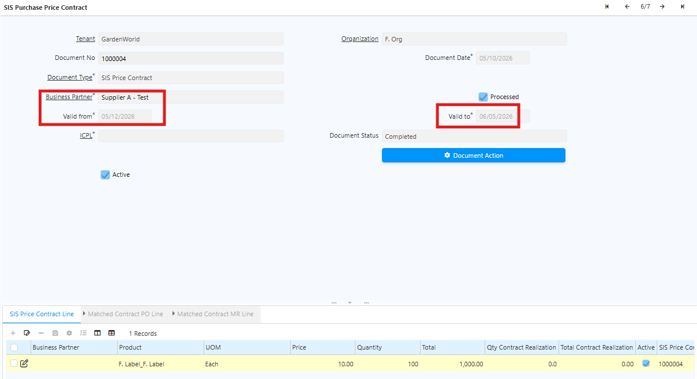
Masuk ke tab SIS Purchase Price Contract Line
Input Produk, Harga Produk, Quantity Produk dan UoM
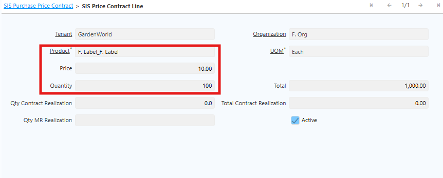
- Klik complete
Setelah dokumen di-complete, sistem akan menjalankan beberapa proses otomatis:
- Sistem membuat ICPL Update dengan status Complete pada ICPL yang sudah di-setting di Business Partner.
- Sistem mengacu pada data valid from, product dan price yang terdapat pada Price Contract Line
- Sistem memperbarui data Purchase Price List berdasarkan price list pada ICPL Base.
- Sistem memperbarui data ICPL sesuai data pada SIS Purchase Price Contract.
Realisasi di Purchase Order
Sebelum Purchase Order di-complete, pastikan data berikut sesuai dengan Purchase Price Contract:
- Business Partner pada PO sama dengan Business Partner pada Purchase Price Contract.
- Product pada PO sama dengan product pada Price Contract Line.
- Tanggal pembelian masih berada dalam periode kontrak:
- Valid From
- Valid To
- Warehouse penerimaan sesuai dengan warehouse pada Purchase Price Contract
Setelah Purchase Order di-complete, sistem akan menjalankan proses berikut:
- Sistem membuat PO Line yang sesuai dengan Price Contract Line.
- Sistem memperbarui nilai:
- Qty Realization
- Total Contract Realization
Update ini membantu perusahaan memonitor realisasi pembelian terhadap kontrak yang sudah disepakati.
Manajemen Asset
Manajemen Penyusutan dan Disposal Asset
Penyusutan asset adalah proses mengalokasikan biaya asset secara sistematis selama masa manfaatnya. Setiap periode, sistem mencatat beban penyusutan dan mengurangi nilai buku asset. Sebelum melakukan penyusutan, pastikan konfigurasi berikut telah selesai:
- Product Category — Gunakan costing method Average PO dan costing level Batch/Lot.

- Attribute Set — Pilih Lot Control dengan pengaturan berikut:
Mandatory Type: Always
Attribute Set Type: Material Management System
Exclude:
- C_OrderLine – Sales Order Line
- M_InOutLine – Shipment/Receipt Line
Un-check field Sales Transaction
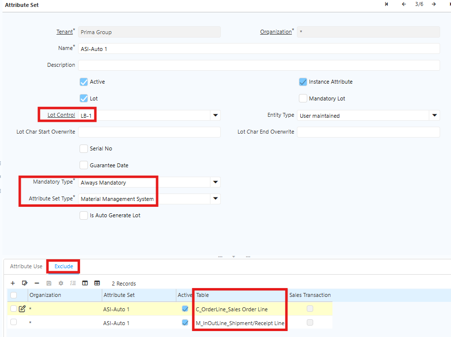
- Master Data Asset Type — Tentukan klasifikasi asset, metode penyusutan, dan GL Document Type.
- Set Product — Atur Product Type ke Item.
- Attribute Set — Sesuaikan dengan kategori asset.
- Asset Type — Sesuaikan dengan kategori asset.
Proses Pengadaan Asset
Pengadaan asset dilakukan melalui tahapan berikut:
- Purchase order
- Material receipt
- Invoice
- Matching invoicee
Setelah proses penerimaan selesai, sistem otomatis membentuk data asset berdasarkan ASI (Attribute Set Instance). Data asset tersebut dapat diakses melalui menu SIS Asset.
Proses Manajemen Penyusutan Asset
Lakukan penyusutan asset melalui langkah-langkah berikut:
- Akses menu SIS Asset.
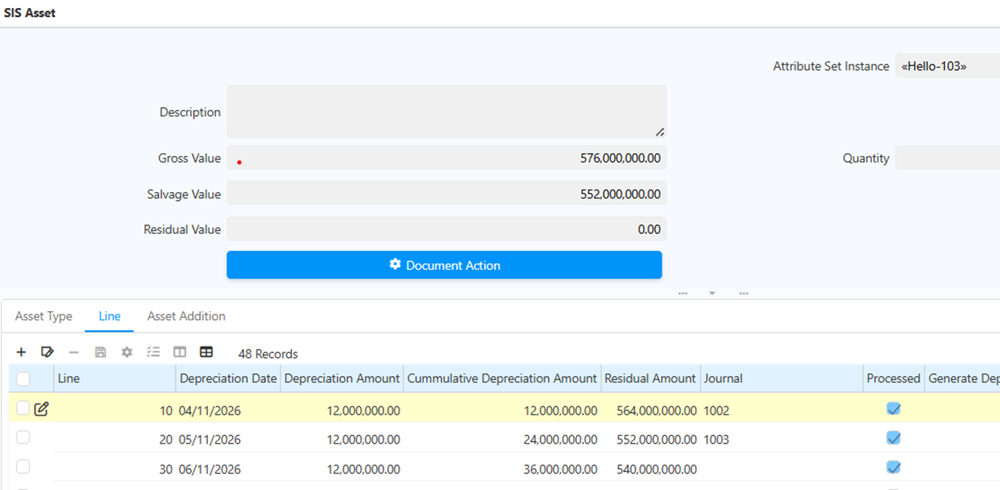
- Generate asset — Data awal akan berstatus Draft.
- Evaluasi asset — Lakukan evaluasi terhadap asset yang berstatus Draft.
- Konfirmasi asset — Validasi asset sebelum digunakan.
- Sistem menampilkan:
- Daftar asset berdasarkan ASI
- Proposal depresiasi sesuai masa manfaat asset
- Penyusutan berjalan sesuai konfigurasi Asset Type.
Jurnal penyusutan di-generate secara otomatis, berdasarkan permintaan user atau jadwal automation scheduler yang berjalan setiap bulan.
Mekanisme Penyusutan Asset
Penyusutan asset bekerja dengan ketentuan berikut:
- Dasar penyusutan menggunakan harga perolehan (harga beli).
- Penentuan batch/lot dilakukan saat penerimaan barang.
- Setiap penerimaan dicatat berdasarkan batch/lot dan mereferensikan dokumen pembelian terkait.
- Penyusutan mengikuti harga Purchase Order, sedangkan nilai disposal dapat disesuaikan dengan kebutuhan bisnis.
Disposal Asset
Disposal adalah proses penghapusan asset dari catatan perusahaan secara permanen. Disposal dilakukan ketika asset sudah tidak layak pakai, dijual, dihibahkan, atau dihancurkan.
Disposal asset dapat dilakukan melalui dua mekanisme:
- Sales order
- Buka menu Sales Order, pastikan Document Type menggunakan Standard Order.
- Pilih asset berdasarkan ASI yang sesuai.
- Proses Shipment, lalu buat Invoice Customer (AR).
- Physical Inventory (Internal Use)
- Buka menu Inventory Decrease/Increase.
- Pilih Document Type Internal Use Inventory.
- Masuk ke Internal Use Line.
- Pilih asset yang akan didisposal berdasarkan ASI.
- Tentukan Charge sebagai beban disposal
Setelah proses disposal selesai — baik melalui Sales Order maupun Internal Use — sistem otomatis memperbarui status disposal pada data asset dan men-generate jurnal disposal.
Berikut ketentuan qty pada inventory decrease/increase:
- Nilai positif — Sistem mengurangi (decrease) stok on-hand sebesar quantity yang diinput.
- Nilai negatif — Sistem menambah (increase) stok on-hand sebesar quantity yang diinput.
Ketentuan ini berlaku pada kombinasi Product, Locator, dan Attribute Set Instance (ASI) yang dipilih pada baris dokumen.
Pergerakan dan Pengelolaan asset
- Perpindahan asset antar lokasi memengaruhi pencatatan penyusutan
- Penyusutan dapat disesuaikan berdasarkan lokasi atau outlet tempat asset berada.
- Asset yang belum digunakan (misalnya masih di gudang) tidak langsung disusutkan. Penyusutan baru dimulai saat asset mulai digunakan di outlet.
Stock Opname Charging
Stock opname charging adalah proses perhitungan dan verifikasi fisik stock material charging — yaitu bahan atau komponen yang digunakan dalam proses produksi. Hasil perhitungan fisik kemudian disesuaikan dengan data yang ada di sistem.
Tipe Charging untuk Stock Opname
Di SCI, terdapat 4 tipe charging untuk stock opname:
Tipe 1 — Stock Opname Charge Induk Non UoM
- Sistem merangkum (summary) selisih quantity per category charge.
- Sub category charge membedakan harga di masing-masing sub category.
- Pastikan konfigurasi sub category charge sesuai ketentuan: harga tertinggi dalam category yang sama harus memiliki sequence terkecil.
- Set charge multiply rate pada artikel yang memiliki faktor pengali
Tipe 2 — Stock Opname Charge Induk dengan UoM
- Category charge mereferensikan UoM yang digunakan untuk konversi dalam kelompok kategori. UoM yang digunakan adalah UoM terbesar dalam kelompok tersebut.
- Artikel dengan Base UoM yang berbeda dari UoM referensi di category charge harus memiliki UoM Conversion ke UoM referensi tersebut.
Tipe 3 — Stock Opname Charge Asosiasi Berdasarkan Bill of Material (BoM)
- Category charge mereferensikan Bill of Material yang diasosiasikan ke masing-masing artikel dalam BoM tertentu untuk perhitungan charge.
- Konfigurasi sequence harus mengikuti urutan berikut: Raw Material → Barang Jual → Barang Kemas.
Tipe 4 — Stock Opname Charge Minus Mutlak Berdasarkan Kategori
- Category charge dibedakan menjadi dua: Dibebankan dan Tidak Dibebankan.
- Konfigurasi sequence harus mengikuti urutan berikut: Charge → Non Charge.
Tipe 5 — Stock Opname Charge Khusus Brand (PPG). Tipe ini adalah tipe charging khusus untuk Brand yang diterapkan untuk tim PPG. Mekanisme perhitungannya adalah sebagai berikut:
- Perhitungan 1 — Jumlahkan seluruh selisih Total Bruto (ICPL). Nilai bruto diambil dari ICPL.
- Perhitungan 2 — Kurangi hasil perhitungan 1 dengan Total Bruto tertinggi.
- Perhitungan 3 — Kalikan hasil perhitungan 2 dengan 50% untuk menentukan varian selisih.
- Perhitungan 4 — Jika hasil perhitungan 3 bernilai minus (negatif), tambahkan Total Netto tertinggi. Jika bernilai positif, penambahan Total Netto tertinggi tidak diperlukan.
- Nilai hilang barang diambil dari Total Netto tertinggi.
Konfigurasi API
Harga Netto Produk
Konfigurasi API ini bertujuan untuk mengambil data harga netto produk yang digunakan dalam stock opname, bersumber dari aplikasi Sky. Ikuti langkah berikut untuk melakukan konfigurasi API di System Configurator:
- Buka menu System Configurator
- Klik New
- Input nama configurator: SIS_INVENTORY_CHARGE5_URL
- Pada field Configured Value, input: https://36.94.102.63:5599
- Klik save
Setelah konfigurasi selesai, sistem akan menampilkan data harga netto produk melalui API di tab SIS Inventory Charge Log setiap kali stock opname charging dijalankan. Jika produk tidak memiliki harga netto, sistem otomatis menggunakan harga default sebesar 75% dari ICPL.
Toleransi Charge
Konfigurasi ini bertujuan untuk mengambil data quantity penjualan dari POS yang bersumber dari aplikasi di luar sistem. Data tersebut digunakan untuk perhitungan toleransi charge stock opname tipe 1–4 untuk tim SCI.
Ikuti langkah berikut untuk melakukan konfigurasi API di System Configurator:
- Buka menu System Configurator
- Klik New
- Input nama configurator: SIS_INVENTORY_EXT_URL
- Pada field Configured Value, input: http://36.95.119.12:5558
- Klik save
Karena data quantity penjualan bersumber dari POS di luar sistem, konfigurasi ini diperlukan agar sistem dapat mengambil dan memperhitungkan data tersebut dalam kalkulasi toleransi charge stock opname.
Konfigurasi Product untuk Stock Opname
Tidak semua product dilakukan stock opname — hanya product tertentu yang telah dipilah oleh perusahaan. Sebelum menjalankan stock opname, lakukan konfigurasi product beserta charge type-nya terlebih dahulu.
Perusahaan menggunakan 5 tipe charge. Sebelum mengkonfigurasi product charge stock opname, pastikan Charge Category dan Charge Sub Category sudah dikonfigurasi terlebih dahulu.
Konfigurasi Master Charge Category
- Buka menu SIS Charge Category
- Klik New
- Tentukan Charge Type sesuai kebutuhan
- Input nama Charge Category
- Tentukan UoM sesuai kebutuhan
- Klik save
Konfigurasi Master Charge Sub Category
Charge Sub Category digunakan untuk perhitungan charge stock opname Tipe 1. Ikuti langkah berikut:
- Buka menu SIS Charge Sub Category
- Klik New
- Tentukan Charge Category
- Input nama Charge Sub Category
- Klik save
Konfigurasi Charge Type pada Product
Setelah Charge Category dan Charge Sub Category selesai dikonfigurasi, lakukan konfigurasi charge type pada masing-masing product. Ikuti langkah berikut:
- Buka menu Product
- Isi field-field yang dibutuhkan
- Pada field Charge Type tentukan tipe sesuai kebijakan
- Pada field SIS Charge Category pilih kategory sesuai kebijakan
- Pada field SIS Charge Sub Category pilih sub kategori sesuai kebijakan
- Pada field Charge Multiply Rate tentukan nilai sesuai kebijakan
- Pada field Charge Tolerance tentukan nilai sesuai kebijakan
- Klik save
Product yang telah dikonfigurasi siap digunakan untuk charge stock opname sesuai kebutuhan operasional perusahaan.
Proses Stock Opname di Sistem
Ikuti langkah-langkah berikut untuk membuat dokumen stock opname:
- Buka menu Physical Inventory
- Klik New
- Input Warehouse yang akan diopname
- Input Movement Date — masukkan tanggal pelaksanaan opname
- Klik Save
- Masuk ke tab Inventory Count Line
- Klik New
- Input Produk Charging yang akan dihitung
- Input Locator — pilih lokasi penyimpanan produk
- Input Quantity Count — masukkan jumlah fisik hasil perhitungan aktual
 11. Sistem otomatis menampilkan Quantity Book
12. Ulangi langkah 7-11 untuk setiap produk
13. Klik Save
14. Jalankan SIS Generate Inventory Charge Amount — sistem menghitung dan menampilkan kalkulasi charge amount untuk seluruh produk.
15. Klik Complete
11. Sistem otomatis menampilkan Quantity Book
12. Ulangi langkah 7-11 untuk setiap produk
13. Klik Save
14. Jalankan SIS Generate Inventory Charge Amount — sistem menghitung dan menampilkan kalkulasi charge amount untuk seluruh produk.
15. Klik Complete
Setelah dokumen stock opname selesai dibuat, gunakan tab SIS Inventory Charge Log untuk melihat detail perhitungan charge amount per tipe. Ikuti langkah berikut:
- Buka menu Physical Inventory
- Masuk ke tab SIS Inventory Charge Log
- Pilih Log sequence pertama
- Sistem akan menampilkan perhitungan charge stock opname untuk masing-masing tipe
Sistem juga menampilkan harga netto untuk produk yang dilakukan stock opname. Harga netto produk bersumber dari aplikasi Sky dan dapat dilihat melalui tab SIS Inventory Charge Log di iDempiere. Ikuti langkah berikut:
- Buka menu Physical Inventory
- Masuk ke tab SIS Inventory Charge Log
- Pilih Log sequence kedua
- Sistem akan menampilkan harga netto untuk artikel yang dipilih
Jika produk tidak memiliki harga netto, sistem otomatis menggunakan harga default sebesar 75% dari ICPL.
Contract Management
Contract Management digunakan untuk dua keperluan utama:
- Mencatat jadwal penerbitan AP Invoice untuk biaya yang sudah pasti dalam periode tertentu, sesuai dokumen kontrak dengan pihak ketiga.
- Membuat jadwal amortisasi otomatis untuk biaya yang bersifat recurring selama periode tertentu.
Sebelum memulai transaksi Contract Management, siapkan master data berikut:
- Cost Center (outlet/showroom/plant)
- Project (opsional)
Ikuti langkah berikut untuk membuat master data Cost Center:
- Buka menu Cost Center
- Input Search Key dan Name sesuai kebutuhan operasional
- Klik save
Konfigurasi Product Biaya
Sebelum menggunakan Contract Management, buat master data product untuk komponen biaya pada kontrak. Ikuti langkah berikut:
- Buka menu Product
- Klik new
- Input nama product
- Input Product Category
- Input Product Type — pilih Expense karena product berfungsi sebagai biaya kontrak
- Pada field Doc Type Invoice AP Contract Management, buat Doc Type AP Invoice per masing-masing komponen kontrak.
- Set Charge AR Receipt Contract Management jika product expense atas kontrak dapat diklaim kembali.
- Masuk ke tab Accounting, lakukan konfigurasi akun berikut:
- Product Expense → di-set sebagai Akun Kredit untuk GL Journal Amortization.
- Amortization Expense → di-set sebagai Akun Debit untuk GL Jurnal Amortisasi.
Langkah Akses Contract Management di Sistem
Ikuti langkah berikut untuk mengakses Contract Management di iDempiere:
- Buka menu SIS Contract Management
- Isi field pada Header:
- Period Type — Pilih Year (Tahun) atau Month (Bulan).
- Cost Center — Isi sesuai outlet atau showroom.
- Tax — Isi pajak yang akan digunakan.
- Business Partner — Isi rekanan yang bekerja sama dalam kontrak.
- Project — Opsional, isi jika terkait pekerjaan pembangunan outlet atau showroom.
- Informasi tambahan — Isi Luas Sewa, Harga per M2, Grace Periode, dan Harga per Tahun.
- Period Contract — Tentukan periode selama masa kontrak
- Periode Sewa Awal — Tentukan tanggal kontrak awal
- Masuk ke tab Contract Management Line.
- Klik New, kemudian isi field berikut:
- Product — Isi dengan produk biaya yang akan diproses.
- Total Amount — Isi nilai kontrak sebelum pajak.
- Percentage — Tentukan persentase dari total amount (jika ada)
- UnAmortized — Centang jika biaya merupakan deposit yang dapat diklaim
- Ulangi langkah 4 untuk komponen biaya lainnya
- Jalankan Generate Schedule untuk membuat jadwal AP Invoice dan GL Amortization. Secara default, sistem mengikuti amount dan periode kontrak. Date schedule dan amount dapat diubah, namun total amount di AP Schedule dan GL Amortization harus tetap sama.
- Hasil generate akan muncul di tab AP Invoice Schedule dan GL Amortization
- Jika terdapat perubahan pada schedule, amount, atau periode, gunakan tombol aksi yang tersedia di Contract Management Line. Berikut fungsi masing-masing tombol:
- Generate schedule — Meng-generate schedule untuk penerbitan AP Invoice dan GL Amortization
- Update Amount Schedule Invoice — Memperbarui nominal jika terdapat perubahan.
- Update Date Schedule Invoice — Memperbarui tanggal; jika ada kompensasi, tanggal dapat dimajukan atau dimundurkan
- Decrease Period CM Invoice — Mengurangi periode; nominal akan ter-kalkulasi otomatis sesuai periode baru.
- Update Amount Schedule Amortisasi — Memperbarui nominal amortisasi jika terdapat perubahan.
- Update Date Schedule Amortisasi — Memperbarui tanggal amortisasi
- SIS Update Total Amount Schedule CM — Memperbarui total amount schedule jika terdapat perubahan nominal di pertengahan periode; jika amount di AP Schedule Invoice diperbarui, amount di GL Amortisasi akan ikut disesuaikan secara otomatis.
- Setelah schedule AP Invoice dan GL Amortization sudah sesuai, klik Complete pada dokumen Contract Management.
- Sistem otomatis men-generate AP Invoice dan GL Amortization sesuai date schedule yang telah dikonfigurasi.
Langkah Klaim Deposit
Jika terdapat biaya deposit yang dapat diklaim, pastikan invoice atas biaya deposit tersebut sudah ter-generate sebelum melakukan klaim. Ikuti langkah berikut:
- Setelah dokumen Contract Management di-complete, tombol Claim CM to AR Receipt akan muncul pada biaya deposit.
- Klik Claim CM to AR Receipt
- Isi field yang tersedia:
- Bank account
- Document type
- Document action
- Transaction date
- Klik ok
Sistem otomatis membentuk Payment AR Receipt atas klaim yang di-generate dan field Claimed akan tercentang secara otomatis.
Langkah Proses Kompensasi
Jika terdapat kompensasi, proses kompensasi dapat dilakukan atas kontrak lain melalui field Add Compensation. Ikuti langkah berikut:
- Buka menu SIS Contract Management
- Isi field pada Header
- Masuk ke tab Contract Management Line.
- Klik New kemudian Isi field berikut:
- Product — Isi dengan produk biaya yang akan diproses.
- Centang field Add Compensation.
- Pada field Contract Management Compensation, pilih dokumen kontrak yang akan dikompensasi.
- Input compensation amount
- Klik complete dokumen contract management
- Masuk ke tab AP Invoice Schedule, lalu jalankan Generate Invoice From Schedule.
- Sistem membentuk 2 Invoice Line pada invoice: invoice amount awal dan invoice kompensasi yang mengurangi total amount invoice.
- Klik complete pada dokumen AP Invoice
Allowance Penerimaan (Material Receipt)
Allowance adalah batas toleransi maksimum penerimaan barang (dalam persentase) yang diizinkan melebihi quantity Purchase Order tanpa memerlukan justifikasi tambahan. Jika quantity yang diterima melampaui batas ini, sistem otomatis menandai transaksi untuk memerlukan persetujuan dari PIC yang berwenang sebelum dokumen dapat di-finalisasi.
Konfigurasi Allowance di Product
Allowance dikonfigurasi di level master produk. Saat produk tersebut dibeli melalui Purchase Order, allowance akan berlaku otomatis saat penerimaan barang (Material Receipt). Ikuti langkah berikut untuk mengkonfigurasi allowance di product:
- Buka menu Product.
- Buat produk baru.
- Tentukan Product Category.
- Pada field Allowance, tentukan batas toleransi maksimum untuk produk tersebut dalam satuan persen.
- Klik Save.
Implementasi Allowance
Skenario Qty dalam batas Allowance
- Buka menu Purchase Order.
- Input Business Partner.
- Input Warehouse untuk penempatan produk.
- Masuk ke tab PO Line.
- Pilih produk yang akan diproses.
- Input quantity produk.
- Klik Save. Saat disimpan, field Allowance di PO Line terisi otomatis sesuai konfigurasi di master produk.
- Klik Complete pada dokumen Purchase Order.
- Masuk ke tab Material Receipt, lalu masuk ke Receipt Line.
- Input quantity barang yang diterima (masih dalam batas allowance).
- Klik Save.
- Klik Complete pada dokumen Material Receipt.
Skenario Qty Melebihi Allowance
- Buka menu Purchase Order.
- Input Business Partner.
- Input Warehouse untuk penempatan produk.
- Masuk ke tab PO Line.
- Pilih produk yang akan diproses.
- Input quantity produk.
- Klik Save. Saat disimpan, field Allowance di PO Line terisi otomatis sesuai konfigurasi di master produk.
- Klik Complete pada dokumen Purchase Order.
- Masuk ke tab Material Receipt, lalu masuk ke Receipt Line.
- Input quantity barang yang diterima (melebihi allowance).
- Klik Save — sistem otomatis mencentang field Need Approval karena quantity melebihi batas allowance.
- PIC yang berwenang harus mengklik menu SIS Update Qty MR Line untuk melakukan approval.
- Klik Complete pada dokumen Material Receipt.
Catatan: Jika PIC yang berwenang belum melakukan approval, dokumen Material Receipt tidak dapat di-complete dan tidak dapat diproses lebih lanjut.
Project Management
Fitur Project Management digunakan untuk mencatat seluruh aktivitas dan penggunaan barang yang berlangsung dalam suatu project. Sebelum memulai transaksi, siapkan master data berikut:
- Cost Center
- Project
- Product/Artikel Project
- Charge Project (CIP) — Sebagai penampung atas penggunaan persediaan dan biaya tambahan.
Konfigurasi Sistem
Sebelum memulai transaksi project, lakukan konfigurasi sistem terlebih dahulu dengan menambahkan SIS_CHARGE_ASSET_ADDITION_ID dengan Configured Value 1000002. Konfigurasi ini digunakan sebagai charge project untuk penambahan nilai project apabila tidak terdapat Credit Note atas pemakaian persediaan dan biaya tambahan.
Konfigurasi Artikel Project
- Buka menu Product.
- Klik New.
- Input Search Key dan Name produk.
- Input UoM Base untuk produk tersebut.
- Tentukan Product Category sesuai konfigurasi.
- Tentukan Attribute Set sesuai konfigurasi.
- Tentukan Asset Type sesuai konfigurasi.
- Pada field Renovation/Repair Asset, pilih No jika merupakan aset baru, atau Yes jika merupakan renovasi atas aset yang sudah ada.
- Field Change Project Price digunakan khusus untuk pekerjaan sipil yang menjadi aset.
- Klik Save.
Field “Change Project Price”
Field Change Project Price digunakan khusus untuk pekerjaan sipil yang menjadi aset. Jika field ini dicentang, field Charge Cost Adjustment akan muncul secara otomatis — isi field tersebut untuk menentukan charge yang digunakan saat Cost Adjustment ter-create.
Sebelum membuat Purchase Order untuk artikel pekerjaan sipil, lakukan konfigurasi Document Type AP Invoice yang akan digunakan terlebih dahulu. Skenario fitur ini ditujukan untuk kondisi di mana amount pada PO dan Invoice berbeda — misalnya akibat realisasi project yang tidak sesuai atau kendala dari vendor. Fitur Change Project Price hadir sebagai solusi untuk menangani kondisi tersebut.
Implementasi Pada Purchase Order
- Buka menu Purchase Order.
- Tentukan Business Partner yang akan diproses.
- Pada field Project, tentukan project yang sedang dikerjakan.
- Pada field Cost Center, tentukan cost center atas project tersebut.
- Masuk ke tab PO Line.
- Tentukan produk yang akan diproses.
- Tentukan quantity produk.
- Klik Save.
- Klik Complete pada dokumen Purchase Order.
- Masuk ke tab Material Receipt, lalu klik Complete.
- Masuk ke Receipt Line, kemudian masuk ke tab Invoice.
- Masuk ke tab Invoice Line.
- Input Amount Price.
- Klik Complete pada dokumen Invoice.
Setelah dokumen Invoice di-complete, sistem otomatis membuat dokumen Cost Adjustment untuk target Product dan ASI yang diterima. Nilai Cost Adjustment mengikuti nilai invoice per satu quantity. Selain itu, cost pada product dengan ASI yang terbentuk saat Material Receipt diperbarui sesuai harga Invoice. Jurnal Cost Adjustment ini berfungsi untuk mengkoreksi jurnal Matched Invoice.
Konfigurasi Charge
Charge digunakan untuk menentukan charge kompensasi pada project. Ikuti langkah berikut untuk membuat master charge project:
- Buka menu Charge.
- Klik New.
- Isi field Name sesuai kebutuhan.
- Pada field Tax Category, tentukan sesuai kebijakan perusahaan.
- Masuk ke tab Accounting.
- Set Charge Account menggunakan akun Project Asset.
- Klik Save.
Langkah Pembuatan Project
- Buka menu Project
- Isi field berikut pada header:
- Business Partner
- Charge Compensation
- Klik save
Setiap project memiliki komponen-komponen pendukung, seperti jasa kontraktor, kabel listrik, dan sebagainya. Komponen-komponen tersebut dicatat melalui Issue to Project. Fitur ini digunakan untuk mencatat penggunaan atau pengiriman barang ke project yang sedang dikerjakan.
Langkah Purchase Order
Dalam project terdapat dua pendekatan Purchase Order:
- PO Besar — PO kepada kontraktor yang tercatat sebagai Business Partner Vendor di project.
- PO Kecil — PO kepada supplier di luar project untuk kebutuhan persediaan atau biaya tambahan.
Seluruh PO akan masuk ke nilai project melalui Issue to Project yang terfilter berdasarkan project terkait. Ikuti langkah berikut untuk membuat PO Project:
- Buka menu Purchase Order.
- Tentukan Business Partner yang akan diproses.
- Pada field Project, tentukan project yang sedang dikerjakan.
- Pada field Cost Center, tentukan cost center atas project tersebut.
- Masuk ke tab PO Line.
- Tentukan produk yang akan diproses.
- Tentukan quantity produk.
- Klik Save.
- Klik Complete pada dokumen Purchase Order.
- Masuk ke tab Material Receipt, lalu klik Complete.
- Masuk ke Receipt Line, kemudian masuk ke tab Invoice.
- Klik Complete pada dokumen Invoice.
Setelah Invoice di-complete, sistem otomatis membuat aset yang akan muncul di menu SIS Asset dan tab Asset pada menu Project. Selain itu, PO, MR, dan Invoice yang telah diproses juga otomatis muncul di tab-tab terkait pada menu Project, sehingga user dapat memantau seluruh transaksi per project.
Langkah Pembuatan Issue to Project
- Buka menu Issue to Project
- Isi field berikut:
- Project — Nama project yang sedang dikerjakan.
- Order — Nomor dokumen Purchase Order atas produk.
- Klik ok
- Sistem menampilkan notifikasi Created — issue atas project berhasil dibuat.
Seluruh issue yang telah dibuat akan muncul di tab Issue pada menu Project di master project terkait. Gunakan fitur Issue to Project untuk mencatat penggunaan bahan secara internal dalam project tersebut.
Jenis-Jenis Project
Terdapat dua pendekatan project di perusahaan:
- Project dengan Credit Note
- Project tanpa Credit Note
Ketentuan ini berlaku untuk semua jenis project — UCIT, renovasi, cold room, dan lainnya — dengan perlakuan yang sama. Yang membedakan antara project UCIT dan renovasi adalah proses pembentukan aset dan jurnalnya.
Project Renovasi (Perbaikan) Asset tanpa Credit Note
Untuk project renovasi, buat artikel khusus renovasi dengan mengatur field Renovation/Repair Asset di master produk menjadi Yes. Pengaturan ini memungkinkan user untuk merelasikan artikel tersebut ke aset yang diperbaiki saat proses MR/BPB, sehingga nilai renovasi dapat ditransfer ke aset existing dan menambah nilainya.
Ikuti langkah berikut untuk memproses PO hingga Invoice untuk artikel renovasi:
- Buat Purchase Order seperti biasa.
- Masuk ke tab Material Receipt, lalu masuk ke Receipt Line.
- Pada field Renovation/Repair Asset, tentukan aset yang akan direnovasi.
- Klik Save.
- Klik Complete pada dokumen Material Receipt.
- Masuk ke tab Invoice, lalu klik Complete.
Di latar belakang, sistem menjalankan proses Asset Transfer ke aset tujuan. Residual Value aset existing bertambah sesuai nilai renovasi, dan sistem otomatis mengkalkulasi ulang nilai depresiasi.
Project Renovasi (Perbaikan) Asset dengan Credit Note
Project dengan Credit Note hanya dapat dilakukan jika seluruh biaya atau persediaan yang dipakai sudah di-Issue to Project. Sistem otomatis mengkalkulasi akumulasi Issue to Project dan membentuk Credit Note, sehingga tagihan project berkurang sesuai akumulasi tersebut.
Ikuti langkah berikut untuk memproses PO hingga Invoice untuk artikel renovasi dengan Credit Note:
- Buat Purchase Order seperti biasa.
- Masuk ke tab Material Receipt, lalu masuk ke Receipt Line.
- Pada field Renovation/Repair Asset, tentukan aset yang akan direnovasi.
- Klik Save.
- Klik Complete pada dokumen Material Receipt.
- Masuk ke tab Invoice.
- Klik tombol Generate Credit Note from Project Issue.
- Klik Complete pada dokumen Invoice.
Saat Generate Credit Note from Project Issue dijalankan, sistem otomatis membentuk Invoice Line di project dengan CIP untuk membalik Issue to Project dengan nilai minus. Dengan Credit Note, nilai aset tidak bertambah, namun tagihan atas project berkurang senilai CIP.
Report Stock per Warehouse
Laporan ini menampilkan posisi stok yang dikelompokkan berdasarkan gudang (warehouse). Gunakan laporan ini untuk memantau distribusi fisik barang di setiap lokasi penyimpanan dan memastikan ketersediaan stok di masing-masing gudang.
Akses Laporan Stock per Warehouse di Sistem
Ikuti langkah berikut untuk mengakses Report Stock per Warehouse di iDempiere:
- Buka menu SIS Report Stock
- Input tanggal pelaporan dan Locator.

- Klik Ok
- Sistem menampilkan Report Stock dalam format Excel.

Report Stock per Artikel
Laporan ini menampilkan posisi stok yang dikelompokkan berdasarkan produk/artikel. Berbeda dengan laporan per warehouse yang berfokus ke lokasi, laporan ini merangkum total stok suatu produk dari semua (atau warehouse tertentu), lengkap dengan nilai dan status replenishment-nya.
Akses Laporan Stock per Artikel di Sistem
Ikuti langkah berikut untuk mengakses Report Stock per Artikel di iDempiere:
- Buka menu SIS Report Stock per Artikel
- Input tanggal pelaporan, Locator & Product.
- Klik Ok
- Sistem menampilkan Report Stock dalam format Excel.

Scheduler Posting Matched Invoice
Proses auto Invoice Vendor yang di lakukan saat melakukan proses complete dokumen Material Receipt/BPB, saat ini jurnal yang terkait dengan Matched Invoices menampilkan informasi Journal Error. Untuk menyelesaikan issue tersebut, saat ini disediakan suatu mekanisme untuk melakukan re-posting jurnal secara otomatis dan tanpa intervensi user/pengguna.
Ikuti langkah langkah dibawah ini untuk melakukan konfigurasi scheduling re-posting jurnal matched invoice:
- Buka menu Scheduler.
- Klik New.
- Input nama: "SIS Auto Reposting Matched Invoice”.
- Pada field Process, pilih "SIS Auto Reposting Match Invoice_SIS Auto Reposting Match Invoice”.
- Pada field Schedule, pilih "1 Minutes SIS”.
- Pada field Supervisor, input sesuai kebutuhan.
- Pada field Days to Keep Log, pilih "1” — nilai ini menentukan jumlah hari log yang akan disimpan.
- Klik Save.
- Klik Not Schedule.
Konfigurasi scheduler ini diperlukan karena jurnal matched invoice dapat mengalami posting error akibat pengaturan auto invoice di document type. Dengan scheduler ini, sistem akan otomatis melakukan reposting jurnal sesuai jadwal yang dikonfigurasi. Meskipun posting error muncul, sistem tetap mencatat jurnal matched invoice di latar belakang.
Tab Log akan diperbarui setiap satu menit sesuai konfigurasi. Sistem secara berkala menjalankan proses reposting matched invoice di latar belakang. Setelah jurnal berhasil ter-posting, log tetap berjalan selama periode yang ditentukan di Days to Keep Log.
Import Data
Import Data adalah proses memasukkan data dari sumber eksternal seperti file CSV atau Excel ke dalam sistem iDempiere. Tujuan utama import data meliputi:
- Migrasi data — memindahkan data dari sistem lama ke iDempiere
- Input massal — memasukkan ratusan/ribuan record sekaligus tanpa input manual satu per satu
- Efisiensi — menghemat waktu dibandingkan proses entry manual
FileZilla
FileZilla adalah aplikasi transfer file open source yang digunakan untuk memindahkan file antara komputer lokal dan server melalui jaringan internet atau jaringan lokal. Dalam konteks iDempiere, FileZilla digunakan untuk mengupload file Excel atau CSV dari PC ke folder di server iDempiere.
Langkah Instalasi & Koneksi FileZilla:
Langkah 1: Install FileZilla
- Download dari https://filezilla-project.org/
- Install Filezilla dan buka aplikasi
Langkah 2: Menghubungkan ke server FTP
- Klik menu Manajemen Situs
- Klik New Site dan beri nama contoh “Prima-Dev”
- Input konfigurasi koneksi sebagai berikut:
- Protocol : SFTP – SSH File Transfer Protocol
- Host : 76.13.18.16
- Port : (sesuai kebijakan)
- Logon : Normal
- User : (sesuai kebijakan)
- Password : (sesuai kebijakan)
- Klik Connect untuk menghubungkan ke server.
Import Data MT940
MT940 adalah format standar SWIFT (Society for Worldwide Interbank Financial Telecommunication) untuk rekening koran elektronik (electronic bank statement). File MT940 memuat informasi transaksi perbankan — mencakup saldo awal, daftar debit/kredit, dan saldo akhir — yang dikirimkan bank kepada nasabah korporat. Di iDempiere, MT940 digunakan dalam modul Bank Statement.
Format MT940 umumnya menggunakan encoding UTF-8. Namun, sistem iDempiere saat ini juga mendukung format MT940 dengan encoding ISO-8859-1. Berikut contoh format file yang digunakan untuk import data Bank Statement.
Langkah Import File MT940:
Siapkan file MT940 dari bank. File MT940 menggunakan format TXT.
Konfigurasi Bank Account di iDempiere:
- Masuk ke Bank/Cash → Account → Account No
Account Number - Pastikan nomor rekening cocok dengan field :25: di file MT940
- Set Currency sesuai (IDR untuk rupiah)
Import melalui FileZilla
- Navigasi ke /home/dev-idempiere/MT940 → Import Bank Statement
- Pilih file MT940 yang akan diimport
- Jika import berhasil, file otomatis berpindah ke folder done
- Dokumen Bank Statement akan menampilkan bank tersebut sebagai pilihan pada field Bank Account.
Import Data PO Kecil
Sebelum melakukan import, pastikan nama file sesuai format yang ditentukan, yaitu: organisasi, value product/search key pada product, dan tahun bulan transaksi. Berikut contoh format file yang digunakan untuk import data PO Kecil.
Langkah Import File PO Kecil:
- Siapkan file PO Kecil dalam format csv
- Import melalui FileZilla
- Navigasi ke /home/dev-idempiere/po_import → Import PO Kecil
- Pilih file PO Kecil yang akan diimport
- Jika import berhasil, file otomatis berpindah ke folder done
- Sistem iDempiere akan membuat dokumen PO dengan status Draft atau In Progress, yang selanjutnya dapat di-confirm sesuai kebutuhan operasional.
Jika file PO Kecil yang diimport tidak sesuai format, sistem tidak akan memproses file tersebut ke iDempiere. Contoh ketidaksesuaian format yang umum terjadi antara lain penggunaan delimiter ; atau penggunaan Product ID pada nama file yang seharusnya menggunakan Product Value.
Saat import gagal, file tidak berpindah ke folder done. Sistem otomatis membuat folder error pada direktori PO Import, yang berisi file txt dengan informasi detail penyebab kegagalan import.
Jika file pertama belum diperbaiki dan file kedua yang diimport juga tidak sesuai format, sistem menampilkan pesan error yang sama. File akan tetap berada di folder PO Import dan tidak akan berpindah hingga kesalahan pada file diperbaiki.
Tax
Sistem iDempiere mendukung konfigurasi Pajak Pertambahan Nilai (PPN) sebesar 11% dengan dua skenario sesuai kebutuhan masing-masing tim:
- Tim SCI — PPN 11% yang bersifat Non Creditable
- Tim PPG — PPN 11% yang bersifat Regular
Masing-masing skenario memiliki konfigurasi akun dan dampak pelaporan yang berbeda.
Tax tim SCI
Ikuti langkah berikut untuk mengkonfigurasi tax rate tim SCI:
- Buka menu Tax Rate
- Klik new
- Isi field berikut:
- Name
- Tax Category
- Valid from
- Centang field Tax Not Credited
- Tax Not Credited Rate
Konfigurasi Tax - Masuk ke tab Accounting
- Pada field Tax Expense dan Tax Credit, tentukan akun sesuai kebijakan tim Accounting.
- Klik save
Tax tim PPG
Ikuti langkah berikut untuk mengkonfigurasi tax rate tim PPG:
- Buka menu Tax Rate
- Klik new
- Isi field berikut:
- Name
- Tax Category
- Valid from
- Input Rate tax sesuai kebutuhan
- Masuk ke tab Accounting
- Pada field Tax Expense dan Tax Credit, tentukan akun sesuai kebijakan tim Accounting.
- Klik save
Implementasi Tax di Purchase Order
Ikuti langkah berikut untuk menerapkan tax pada transaksi Purchase Order:
- Buka menu Purchase Order
- Input Business Partner
- Input warehouse untuk penempatan produk
- Tentukan tax yang akan digunakan
- Masuk ke tab PO Line
- Pilih product yang akan diproses
- Input qty product
- Klik save
- Klik complete dokumen
Berikut report Purchase Order untuk masing-masing skenario PPN:
- Report Tim PPG
- Report Tim SCI
Attribute Set Instance
Attribute Set
Attribute Set adalah fitur yang memungkinkan pencatatan atribut tambahan pada produk di level lot, serial number, atau batch. Fitur ini sangat berguna untuk produk yang memerlukan pelacakan kualitas, tanggal kedaluwarsa, atau identifikasi individual.
Komponen Attribute Set
- Lot — Pengelompokan produk dalam satu batch produksi atau pengiriman. Produk dengan lot yang sama dianggap memiliki karakteristik yang sama.memiliki karakteristik yang sama.
- Lot Control — Format dan urutan penomoran lot yang dibuat sistem secara konsisten. Tanpa Lot Control, operator harus mengetik nomor lot secara manual setiap kali menerima barang — rentan typo, tidak seragam, dan sulit dianalisis.
- Guarantee Date — Tanggal sampai kapan produk dijamin kualitasnya (tanggal kedaluwarsa/best before). Atribut ini paling kritis untuk produk pangan, farmasi, dan bahan kimia.
Fungsi Guarantee Date
Guarantee Date digunakan untuk:
- Mencatat tanggal kedaluwarsa produk saat penerimaan barang.
- Menjadi dasar perhitungan otomatis melalui Guarantee Days yang dikonfigurasi di level Product.
- Menjadi basis peringatan jika stok mendekati tanggal kedaluwarsa.
Implementasi Attribute Set
Konfigurasi Master Data Attribute Set
- Buka menu Attribute Set
- Centang field Lot
- Centang field Guarantee Date
- Centang field Instance Attribute
- Centang field Mandatory Guarantee Date
- Pada field Mandatory Type, pilih Always Mandatory
- Pada field Attribute Set Type, pilih Material Management System
- Masuk ke tab Exclude, input data berikut:
- C_OrderLine – Sales Order Line
- M_InOutLine – Shipment/Receipt Line
- M_MovementLine_Move Line
- Un-check field Sales Transaction

Exclude - Klik Save
Setup Attribute Set Instance di Produk
- Buka Menu Product
- Input field-field sesuai kebutuhan
- Pada field Attribute Set, pilih ASI yang konfigurasi
- Klik Save
Purchase Order & Penerimaan Barang
- Buka menu Purchase Order
- Input field-field mandatory
- Masuk ke tab PO Line, input produk dan quantity produk yang akan diproses
- Klik Complete
- Masuk ke tab Material Receipt, lalu masuk ke Receipt Line
- Pada tab Attributes, buat Attribute Set Instance (ASI) dan isi Guarantee Date sesuai konfigurasi.
- Klik save
- Klik complete dokumen material receipt
Pada report Material Receipt, sistem menampilkan expired date yang merupakan Guarantee Date untuk masing-masing produk dan ASI.
Jika user perlu melakukan breakdown quantity pada attribute set lines, gunakan fitur Generate ASI untuk membagi quantity sesuai kebutuhan. Quantity hasil generate masih dapat diedit dan disesuaikan dengan quantity aktual penerimaan barang. Ikuti langkah berikut untuk melakukan generate Attribute Set Instance:
- Masuk ke tab Material Receipt, lalu masuk ke Receipt Line.
- Klik tombol setting (⚙), kemudian klik SIS Generate Distribute Attribute.
- Input total line dari ASI yang dibutuhkan.
- Klik ok
- Sistem otomatis membentuk line ASI sesuai konfigurasi yang diinput.
Purchase Order
Purchase Order adalah dokumen yang digunakan untuk mencatat dan mengelola proses pemesanan barang atau jasa kepada supplier. Dokumen ini memuat informasi mengenai supplier, produk yang dipesan, jumlah, harga, tanggal pemesanan, metode pembayaran, dan informasi pendukung lainnya.
Di iDempiere, Purchase Order berfungsi sebagai dasar proses pengadaan barang — mulai dari pembuatan pesanan hingga penerimaan barang dan penagihan (Invoice). Dengan Purchase Order, perusahaan memastikan seluruh transaksi pembelian terdokumentasi dengan baik dan sesuai proses bisnis yang telah ditetapkan.
Alur Proses Purchase Order
- Buka menu Purchase Order
- Input Business Partner
- Input warehouse untuk penempatan produk
- Masuk ke tab PO Line
- Pilih product yang akan diproses
- Input quantity product
- Klik save
- Klik complete pada dokumen
Pengelolaan Purchase Order
Perubahan Business Partner pada Purchase Order
Apabila terjadi kesalahan pemilihan Business Partner (Supplier), perubahan Business Partner tidak dilakukan secara langsung pada dokumen Purchase Order, melainkan melalui menu SIS Change BP PO. Ikuti langkah berikut:
- Pastikan dokumen PO masih berstatus Draft.
- Pilih dokumen yang akan dilakukan perubahan
- Klik ikon Setting (⚙), kemudian pilih SIS Change BP PO.
- Input Business Partner baru yang akan menggantikan Business Partner sebelumnya.
- Klik ok
Sistem otomatis memperbarui informasi Business Partner pada dokumen Purchase Order.
Catatan: Perubahan Business Partner hanya dapat dilakukan pada Purchase Order yang masih berstatus Draft.
Perubahan Warehouse pada Purchase Order
Jika terdapat perubahan tujuan gudang pada Purchase Order, lakukan perubahan melalui menu SIS Change Warehouse Order. Ikuti langkah berikut:
- Buka menu Purchase Order
- Cari dan pilih dokumen PO yang akan diubah warehousenya.
- Klik ikon Setting (⚙), kemudian pilih SIS Change Warehouse Order
- Pilih Warehouse baru sebagai tujuan penerimaan barang.
- Klik ok
Sistem otomatis mencatat warehouse baru di tab Listing PO Warehouse pada dokumen PO. Tab ini berfungsi sebagai riwayat perubahan warehouse sehingga setiap perubahan dapat terlacak dengan baik.
Catatan: Perubahan Warehouse hanya dapat dilakukan pada Purchase Order yang masih berstatus Complete.
Menutup Purchase Order
Purchase Order berstatus Complete dapat ditutup (Close) jika proses pembelian telah selesai atau tidak ada transaksi lanjutan. Lakukan penutupan melalui menu SIS Close Document PO. Ikuti langkah berikut:
- Buka menu SIS Close Document PO
- Input Date Order From dan To
- Input Document Type yang akan diproses
- Input Business Partner yang akan diproses
- Klik ok
Setelah berstatus Closed, dokumen tidak dapat digunakan untuk transaksi lanjutan dan dinyatakan selesai sesuai proses bisnis yang berlaku.
Catatan: Proses Close hanya dapat dilakukan pada Purchase Order yang berstatus Complete.
Menghapus Purchase Order
Purchase Order dapat dihapus jika dokumen tidak lagi diperlukan, misalnya karena:
- Terjadi kesalahan input data.
- Purchase Order dibuat secara tidak sengaja (duplicate).
- Transaksi dibatalkan sebelum diproses lebih lanjut.
- Alasan operasional lainnya sesuai kebijakan perusahaan.
Lakukan penghapusan melalui menu SIS Delete Document PO. Ikuti langkah berikut:
- Buka menu SIS Delete Document PO
- Input Date Order From dan To
- Input Document Type yang akan diproses
- Input Business Partner yang akan diproses
- Klik ok
Catatan: Hanya Purchase Order berstatus Draft yang dapat dihapus melalui menu ini.
Product dan Category Access
Product Category Access membatasi produk yang dapat diproses dalam suatu transaksi berdasarkan kategori produk yang telah dikonfigurasi di level Product Category. Jika kategori produk dikonfigurasi pada document type tertentu, hanya produk dalam kategori tersebut yang dapat diproses — produk di luar kategori tidak akan bisa digunakan.
Product Access bekerja dengan prinsip yang sama, namun pembatasan dilakukan per produk secara spesifik. User menentukan produk mana saja yang dapat diproses, dan sistem hanya memproses transaksi untuk produk-produk tersebut.
Konfigurasi Product Category Access dan Product Access dilakukan di level Document Type. Document type yang mendukung konfigurasi ini antara lain:
- Order Line
- Movement Line
- Invoice Line
- RDO Line
- ICPL Line
Konfigurasi Product Category dan Product Access
Karena konfigurasi berlaku per document type, lakukan konfigurasi untuk setiap document type yang dibutuhkan.
Konfigurasi Product Access
- Buka menu Document Type.
- Klik New
- Input Name document type
- Centang field Product Access pada header untuk mengaktifkan pembatasan produk.
- Klik Generate Product, kemudian input produk-produk yang akan diproses.
- Klik SIS Generate Product Access.
- Tab Product Access akan menampilkan daftar produk yang telah dikonfigurasi.
Konfigurasi Product Category Access
- Buka menu Document Type
- Klik New
- Input Name document type
- Centang field Product Category Access pada header untuk mengaktifkan pembatasan kategori produk.
- Klik Generate Product Category, kemudian input kategori produk yang akan diproses.
- Klik SIS Generate Product Category Access.
- Tab Product Category Access akan menampilkan daftar kategori produk yang telah dikonfigurasi.
Ulangi langkah di atas untuk setiap document type lain yang memerlukan konfigurasi. Jika transaksi tidak memerlukan pembatasan produk khusus, konfigurasi ini tidak perlu dilakukan.
Implementasi Product & Category Access
Purchase Order
- Buka menu Purchase Order.
- Pilih Document Type yang telah dikonfigurasi.
- Input Business Partner.
- Input Warehouse untuk penempatan produk.
- Masuk ke tab PO Line.
- Pada field Product, sistem hanya menampilkan produk yang sesuai konfigurasi Product & Category Access.
- Input quantity product.
- Klik Save.
- Klik Complete pada dokumen.
Movement
- Buka menu Inventory Move.
- Pilih Document Type yang telah dikonfigurasi.
- Input Business Partner.
- Input Warehouse untuk penempatan produk.
- Masuk ke tab Move Line.
- Pada field Product, sistem hanya menampilkan produk yang sesuai konfigurasi Product & Category Access.
- Input quantity product.
- Pilih Locator untuk penempatan produk.
- Klik Save.
- Klik Complete pada dokumen.
Invoice
- Buka menu Purchase Invoice and Credit/Debit.
- Pilih Target Document Type yang telah dikonfigurasi.
- Input Business Partner.
- Masuk ke tab Invoice Line.
- Pada field Product, sistem hanya menampilkan produk yang sesuai konfigurasi Product & Category Access.
- Input quantity product.
- Klik Save.
- Klik Complete pada dokumen.
Request Distribution Order (RDO)
- Buka menu SIS RDO.
- Tentukan Warehouse dan Warehouse To untuk pendistribusian produk.
- Tentukan Locator dan Locator To untuk penempatan produk.
- Jalankan Generate RDO Line — sistem menampilkan daftar produk yang telah dikonfigurasi.
- Pilih produk yang akan didistribusikan sesuai kebutuhan.
- Validasi quantity distribusi.
- Klik Complete Document untuk menyelesaikan proses RDO.
Document Type
Document Type adalah konfigurasi yang mendefinisikan perilaku sebuah dokumen transaksi — seperti Purchase Order, Sales Invoice, Payment, dan sebagainya. Setiap dokumen di iDempiere memiliki tipe yang mengontrol:
- Nomor dokumen (sequence/auto-numbering)
- Alur persetujuan (DocAction)
- Jurnal akuntansi yang dihasilkan
Di iDempiere, terdapat tiga lapisan yang berbeda namun saling terkait:
- Document Base Type — Lapisan sistem iDempiere yang tidak dapat ditambah atau diubah oleh pengguna. Document Base Type menentukan kategori utama suatu dokumen
- Document Type — Lapisan konfigurasi yang dibuat dan dikustomisasi oleh admin per organisasi, dan selalu terhubung ke salah satu Document Base Type. Document type menentukan konfigurasi operasional dokumen.
- Document Sub Type — Lapisan ketiga dalam hierarki dokumen iDempiere, yang berada di bawah Document Base Type dan Document Type. Document Sub Type menentukan fungsi dan perilaku spesifik dari dokumen yang berada dalam kategori yang sama.
Document Sub Type mengendalikan logika bisnis yang lebih spesifik, seperti perlakuan akuntansi, pergerakan persediaan, serta jurnal akuntansi yang dihasilkan. Field ini hanya tersedia pada Document Base Type yang mendukung penggunaan sub type. Apabila suatu Document Base Type tidak memiliki sub type, maka field ini akan kosong dan tidak memengaruhi proses transaksi.
Sebagai contoh, Material Physical Inventory memiliki tiga Document Sub Type, yaitu:
- Cost Adjustment digunakan untuk melakukan penyesuaian nilai persediaan atau revaluasi Harga Pokok Persediaan (HPP) tanpa mengubah kuantitas stok.
- Internal Use Inventory digunakan untuk mencatat pengeluaran persediaan untuk kebutuhan internal perusahaan.
- Physical Inventory digunakan untuk mencatat hasil stock opname dan menyesuaikan kuantitas persediaan berdasarkan kondisi fisik di gudang.
Ketiga Document Sub Type tersebut menggunakan Document Base Type yang sama, yaitu Material Physical Inventory, namun masing-masing menjalankan fungsi bisnis yang berbeda. Oleh karena itu, setiap sub type menerapkan logika proses, perlakuan akuntansi, dan jurnal yang berbeda sesuai dengan tujuan transaksinya.
Berikut Document Base Type yang telah terdefinisi di sistem iDempiere:
| Name | Value |
|---|---|
| AP Credit Memo | APC |
| AP Invoice | API |
| AP Payment | APP |
| AR Credit Memo | ARC |
| AR Invoice | ARI |
| AR Pro Forma Invoice | ARF |
| AR Receipt | ARR |
| Bank Statement | CMB |
| GL Document | GLD |
| GL Journal | GLJ |
| ICPL | ICP |
| ICPL Update | ICU |
| Match Invoice | MXI |
| Match PO | MXP |
| Material Delivery | MMS |
| Material Movement | MMM |
| Material Physical Inventory | MMI |
| Material Production | MMP |
| Material Receipt | MMR |
| Payment Allocation | CMA |
| Production Order Planning | POP |
| Project Issue | PJI |
| Purchase Order | POO |
| Purchase Requisition | POR |
| Sales Order | SOO |
| SIS Asset | AST |
| SIS Asset Addition | AAD |
| SIS Contract Management | CBT |
| SIS MPS | MPS |
| SIS Price Contract | SPC |
| SIS RDO | RDO |
Konfigurasi Document Type di Sistem
- Buka menu Window, Tab and Field.
- Cari Document Type yang akan dikonfigurasi.
- Masuk ke tab Tab.
- Masuk ke Field, kemudian cari Document Base Type atau Target Document Type.
- Klik tab Column.
- Klik Dynamic Validation — pada Validation Code akan tertera Document Base Type yang terhubung ke Document Type tersebut.
- Klik save
Saat user membuat Document Type baru dan memilih Base Type, sistem otomatis mewarisi sejumlah perilaku dari Base Type tersebut yang tidak dapat diubah di level Document Type. Satu Base Type dapat memiliki banyak Document Type, namun satu Document Type hanya boleh memiliki satu Base Type.
Header Document Type
Berikut penjelasan field yang terdapat pada header Document Type:
- Name — Nama Document Type yang muncul di dropdown saat user membuat dokumen transaksi. Contoh: Purchase Order, Material Movement.
- Document Base Type — Tipe dasar dokumen. Wajib diisi. Menentukan logika akuntansi, alur DocAction, dan form yang digunakan. Tidak dapat diubah setelah record disimpan.
- Sales Transaction — Menandakan transaksi ke customer (sisi AR/Sales). Biarkan unchecked untuk transaksi ke vendor (sisi AP/Purchase).
- Default — Menjadikan Document Type ini sebagai default untuk Base Type-nya. Hanya satu yang boleh dicentang per kategori per organisasi.
- Document Sequence — Sequence penomoran yang digunakan untuk menghasilkan nomor dokumen otomatis. Dikonfigurasi di menu Sequence.
- Definite Sequence — Sequence kedua yang digunakan saat dokumen berstatus Completed. Berguna jika nomor draft berbeda dengan nomor dokumen final.
- GL Category — Kategori General Ledger untuk pengelompokan jurnal di laporan GL. Wajib diisi untuk Base Type yang menghasilkan posting akuntansi.
- Document Number Controlled — Jika dicentang, nomor dokumen dikontrol penuh oleh system sequence dan tidak dapat diedit manual.
- Overwrite Sequence on Complete — Menentukan apakah sequence akan ditimpa ulang saat dokumen dinyatakan selesai.
- Overwrite Date on Complete — Mengizinkan sistem mengubah tanggal transaksi menjadi tanggal penyelesaian secara otomatis saat status berubah menjadi Complete.
- Create Counter Document — Untuk dokumen antar-organisasi (intercompany). Jika dicentang, sistem otomatis membuat dokumen balasan di organisasi lain saat dokumen dibuat.
- Counter Document Type — Menentukan tipe dokumen yang di-generate di organisasi lawan.
- Document Copies — Jumlah salinan yang dicetak secara default saat dokumen ini dicetak.
- Print Format — Format cetak default yang digunakan saat mencetak dokumen.
- Product Access — Membatasi produk secara spesifik yang dapat diproses dalam suatu transaksi.
- Product Category Access — Membatasi produk yang dapat diproses berdasarkan kategori produk yang dikonfigurasi di level Product Category.
Header Document Type juga memiliki field Auto Back Order. Field ini berfungsi memisahkan pesanan yang belum terpenuhi akibat stok kosong menjadi dokumen baru secara otomatis, sehingga sisa pesanan tetap tercatat dan dapat diproses segera setelah stok tersedia.
Setup Auto Sequence Number (Penomoran Otomatis)
Penomoran otomatis dokumen di iDempiere dikelola melalui mekanisme Sequence yang terhubung ke Document Type. Ikuti langkah berikut untuk melakukan konfigurasi:
- Buka Document Type yang akan diproses
- Klik field Document Sequence
- Isi field-field berikut:
- Name — Nama sequence
- Prefix — Awalan nomor dokumen yang muncul sebelum angka
- Suffix — Akhiran nomor
- Increment — Penambahan angka setiap kali nomor baru digenerate
- Start No — Angka awal sequence. Akan increment setiap dokumen baru
- Decimal Pattern — Format padding angka, contoh 000 akan menghasilkan 000, 001, dan seterusnya.
- Restart sequence every year — merestart penomoran setiap tahun.
- Restart sequence every month — merestart penomoran setiap bulan.
- Restart sequence every day — merestart penomoran setiap hari.
- Date Column — Input DateOrdered
- Centang field Auto Numbering.
- Klik save
Setup Auto Generate Material Receipt
Material Receipt (MR) adalah dokumen yang mencatat penerimaan barang fisik dari vendor. MR dapat di-generate langsung dari Purchase Order yang sudah berstatus Completed. Ikuti langkah berikut untuk mengkonfigurasi auto generate Material Receipt:
- Buka document type Purchase Order
- Centang field Generate MR — field Document Type for MR akan muncul secara otomatis.
- Pilih Document Type for MR sesuai kebutuhan perusahaan
- Klik save
Saat Purchase Order di-complete, sistem otomatis men-generate Material Receipt dengan status Draft. Dokumen tersebut dapat diverifikasi dan di-complete jika sudah sesuai.
Setup Auto Invoice dari Material Receipt
Fitur Auto Invoice memungkinkan sistem membuat AP Invoice secara otomatis saat Material Receipt (MR) di-complete, tanpa input manual dari pengguna. Ikuti langkah berikut untuk melakukan konfigurasi:
- Buka menu Document Type Material Receipt.
- Centang field Auto Invoice AP untuk mengaktifkan auto-generation invoice.
- Pada field Document Type Invoice AP yang muncul, pilih document type invoice yang sesuai.
- Pada field Document Action Invoice AP, pilih document action untuk menentukan status invoice yang ter-generate — Draft atau Complete.
- Klik save.
Document Type SIS RDO
RDO adalah dokumen yang digunakan untuk mendistribusikan dan mengalokasikan permintaan barang ke warehouse tujuan masing-masing. Dokumen SIS RDO memiliki beberapa field khusus yang hanya tersedia pada dokumen ini, yaitu:
- Document Type Delivery — Mencatat barang keluar dari gudang asal.
- Document Type Receipt — Mencatat penerimaan barang dari vendor.
- Warehouse Intransit — Gudang penerima barang dari gudang asal.
- Locator Transit — Lokasi penyimpanan di gudang penerima barang.
Saat dokumen RDO di-complete, sistem otomatis membentuk dokumen Delivery dan merilis dokumen Receipt. Oleh karena itu, pastikan konfigurasi Document Type untuk Delivery dan Receipt sudah dilakukan sebelum memproses RDO.
Tools
Bank Statement
Complete
Jika perlu meng-complete dokumen Bank Statement dalam jumlah banyak — puluhan bahkan ratusan — gunakan tools SIS Complete Bank Statement. Ikuti langkah berikut:
- Buka menu SIS Complete Bank Statement
- Input date statement
- Pilih Document Type “Bank Statement”
- Pilih Bank Account yang akan diproses
- Klik ok
Sistem otomatis meng-complete seluruh dokumen dalam rentang waktu yang dikonfigurasi.
Delete
Jika perlu menghapus dokumen Bank Statement yang tidak diperlukan atau merupakan duplikat, gunakan tools SIS Delete Bank Statement. Ikuti langkah berikut:
- Buka menu SIS Delete Bank Statement
- Input date statement
- Pilih Document Type “Bank Statement”
- Pilih Bank Account yang akan diproses
- Klik ok
Sistem otomatis menghapus seluruh dokumen dalam rentang waktu yang dikonfigurasi.
Catatan: Proses Delete hanya dapat dilakukan pada dokumen Bank/Cash Statement berstatus Draft.
Movement
Complete
Jika perlu meng-complete dokumen Inventory Move dalam jumlah banyak gunakan tools SIS Complete Inventory Move. Ikuti langkah berikut:
- Buka menu SIS Complete Inventory Move
- Input Movement Date
- Pilih Document Type
- Klik ok
Sistem otomatis meng-complete seluruh dokumen dalam rentang waktu yang dikonfigurasi.
Delete
Jika perlu menghapus dokumen Inventory Move yang tidak diperlukan atau merupakan duplikat, gunakan tools SIS Delete Inventory Move. Ikuti langkah berikut:
- Buka menu SIS Delete Inventory Move
- Input Movement Date
- Pilih Document Type
- Klik ok
Sistem otomatis menghapus seluruh dokumen dalam rentang waktu yang dikonfigurasi.
Catatan: Proses Delete hanya dapat dilakukan pada dokumen Inventory Move berstatus Draft.
Physical Inventory
Complete
Jika perlu meng-complete dokumen Physical Inventory dalam jumlah banyak gunakan tools SIS Complete Physical Inventory. Ikuti langkah berikut:
- Buka menu SIS Complete Physical Inventory
- Input Movement Date
- Pilih Document Type
- Klik ok
Sistem otomatis meng-complete seluruh dokumen dalam rentang waktu yang dikonfigurasi.
Delete
Jika perlu menghapus dokumen Physical Inventory yang tidak diperlukan atau merupakan duplikat, gunakan tools SIS Delete Physical Inventory. Ikuti langkah berikut:
- Buka menu SIS Delete Physical Inventory
- Input Movement Date
- Pilih Document Type
- Klik ok
Sistem otomatis menghapus seluruh dokumen dalam rentang waktu yang dikonfigurasi.
Catatan: Proses Delete hanya dapat dilakukan pada dokumen Physical Inventory yang berstatus Draft.
Invoice
Complete
Fitur SIS Complete Invoice digunakan untuk meng-complete dokumen invoice dalam jumlah banyak — bahkan hingga puluhan — sekaligus. Proses complete mengeksekusi logika bisnis, memperbarui stok, dan menghasilkan jurnal akuntansi secara otomatis.
Ikuti langkah berikut untuk meng-complete dokumen invoice:
- Buka menu SIS Complete Invoice.
- Input Date Invoice.
- Pilih Document Type.
- Pilih Business Partner.
- Klik OK.
Sistem otomatis meng-complete seluruh dokumen dalam rentang waktu yang dikonfigurasi. Setelah dokumen di-complete, nominal invoice tidak dapat diubah dan invoice resmi masuk ke dalam daftar piutang/utang bisnis, serta siap diproses Payment/Receipt.
Catatan: Proses Complete hanya dapat dilakukan pada dokumen Invoice yang berstatus Draft.
Delete
Fitur SIS Delete Invoice digunakan untuk menghapus baris atau seluruh dokumen invoice yang masih berstatus Draft atau In Progress. Gunakan fitur ini untuk menghapus tagihan yang salah input atau salah nominal sebelum terjurnal, serta membersihkan antrean dokumen dari modul Accounts Receivable atau Accounts Payable.
Ikuti langkah berikut untuk menghapus dokumen invoice:
- Buka menu SIS Delete Invoice.
- Input Date Invoice.
- Pilih Document Type.
- Pilih Business Partner.
- Klik OK.
Sistem otomatis menghapus seluruh dokumen dalam rentang waktu yang dikonfigurasi.
Catatan: Proses Delete hanya dapat dilakukan pada dokumen Invoice yang berstatus Draft.
Asset
Generate GL Journal Depreciation
Fitur Generate GL Journal Depreciation digunakan untuk men-generate depresiasi pada seluruh aset sesuai periode dan tanggal depresiasi masing-masing secara sekaligus. Dengan fitur ini, user tidak perlu men-generate depresiasi satu per satu — mengingat aset perusahaan bisa mencapai puluhan bahkan ratusan.
Fitur ini menyediakan dua pendekatan generate jurnal:
- Periode Depresiasi — Jika dipilih, field Depreciation Date akan tersembunyi secara otomatis.
- Depreciation Date — Jika dipilih, field Period akan tersembunyi secara otomatis.
Ikuti langkah berikut untuk men-generate GL Journal Depreciation:
- Buka menu SIS Generate GL Journal Depreciation.
- Pilih Organization.
- Pilih Periode Depresiasi atau Depreciation Date sesuai pendekatan yang digunakan.
- Pilih Document Type.
- Klik OK.
Sistem otomatis memproses depresiasi pada seluruh aset di periode yang telah dikonfigurasi.
Contract Management
Generate AP Invoice
Fitur Generate AP Invoice digunakan untuk men-generate invoice dari beberapa dokumen kontrak manajemen yang memiliki tanggal jatuh tempo yang sama sekaligus. Dengan fitur ini, user tidak perlu men-generate invoice satu per satu per kontrak — mengingat kontrak perusahaan bisa mencapai puluhan bahkan ratusan.
Ikuti langkah berikut untuk men-generate AP Invoice:
- Buka menu SIS Generate AP Invoice Contract Management.
- Pilih Organization.
- Pilih Document Type.
- Pilih Schedule Date invoice
- Klik OK.
Sistem otomatis men-generate invoice atas seluruh kontrak dengan periode yang telah dikonfigurasi. Setelah invoice ter-generate, tim payment dapat segera melakukan pembayaran atas kontrak-kontrak tersebut.
Generate GL Journal Depreciation
Fitur Generate GL Journal Depreciation pada Contract Management digunakan untuk men-generate jurnal amortisasi pada seluruh kontrak sesuai periode masing-masing secara sekaligus. Dengan fitur ini, user tidak perlu men-generate amortisasi satu per satu per kontrak.
Ikuti langkah berikut untuk men-generate GL Journal Depreciation:
- Buka menu SIS Generate GL Journal Depreciation Contract Management.
- Pilih Organization.
- Pilih Document Type.
- Pilih Schedule Date depresiasi.
- Klik OK.
Sistem otomatis memproses amortisasi pada masing-masing kontrak manajemen di periode yang telah dikonfigurasi
Format Report
Satu document type dapat memiliki beberapa pilihan sub document type pada dropdown. Contoh: document type Purchase Order dapat memiliki pilihan PO General, PO Bahan Baku, PO Inventaris, PO Barang Kemas, PO Perlengkapan, dan sebagainya. Konfigurasi serupa juga dapat diterapkan pada document type lain, seperti Invoice dengan pilihan Credit Note, _Invoice Vendor Lain-lain, dan sebagainya.
Untuk mengatur dropdown tersebut, lakukan konfigurasi pada setiap document type yang membutuhkan.
Konfigurasi ini bertujuan untuk:
- Memisahkan penomoran dokumen.
- Menerapkan Print Format berbeda — setiap document type dapat menggunakan Print Format PDF dengan kolom, layout, atau logo yang berbeda.
- Menerapkan workflow approval berbeda — misalnya, PO Inventaris memerlukan approval lebih tinggi dibanding PO Bahan Baku.
- Memudahkan filter dan pelaporan per kategori pembelian.
Konfigurasi Document Type
Setiap document type dapat menghasilkan report dengan pilihan yang berbeda. Oleh karena itu, tim IT harus menyiapkan file Jasper untuk masing-masing report. Contoh: document type Purchase Order dapat memiliki report PO General dan PO Bahan Baku Woven.
Untuk referensi print Jasper pada dokumen PO, gunakan dua parameter berikut:
- Process — Menggunakan default logic berdasarkan AD_Process_UU. Contoh logic yang digunakan:
@SQL=select ad_process_id from ad_process where ad_process_uu='019e267d-2690-7322-a4a2-122489db370d'
- Process Detail Report — Menggunakan Dynamic Validation SIS_ProcessDetailReport by Process DT Target Access.
Pastikan field Report pada menu Report & Access sudah dicentang agar report tersebut muncul di tenant dan sistem.
Ikuti langkah berikut untuk melakukan konfigurasi report print pada masing-masing document type:
- Buka menu Document Type yang akan dikonfigurasi, contoh: Purchase Order.
- Masuk ke tab Report Detail Access.
- Klik New.
- Pada field Process, pilih proses sesuai kebutuhan perusahaan.
- Pada field Process Detail Report, input report sesuai kebutuhan perusahaan.
- Klik save.
Ulangi langkah di atas untuk document type lain yang memerlukan konfigurasi serupa. Setelah konfigurasi selesai, sistem akan menampilkan pilihan format report tersebut saat user melakukan report pada document yang bersangkutan.
Forecast Report
Forecast report adalah laporan yang menampilkan stok di gudang/locator, asal transaksi, dan movement antar gudang. Ikuti langkah berikut untuk mengakses Forecast Report di iDempiere:
- Buka menu SIS Forecast Report
- Pilih Product yang akan dicek.
- T Warehouse yang akan diperiksa.
- Tentukan Locator atau lokasi penyimpanan produk di dalam warehouse.
- Klik Ok
Sistem menampilkan informasi ketersediaan stock produk sesuai kriteria yang dipilih, meliputi data produk pada warehouse dan locator yang ditentukan.
Forecast report menyediakan informasi Stock On Hand, Purchase Requisition, dan Material Movement untuk membantu user memantau ketersediaan material, kebutuhan pembelian, serta penggunaan material di gudang.
Stock On Hand
Stock On Hand menampilkan jumlah stok material yang tersedia di gudang secara aktual. Sistem akan memperbarui jumlah stok secara otomatis setiap kali terjadi transaksi yang memengaruhi persediaan, seperti:
- Penerimaan barang (Material Receipt)
- Pengeluaran material untuk produksi (Material Movement)
Purchase Requisition
Purchase Requisition mencatat kebutuhan pembelian material yang tidak dapat dipenuhi oleh stok yang tersedia di gudang.
Purchase Requisition merupakan dasar bagi tim Purchasing untuk melanjutkan proses pengadaan melalui Purchase Order. Dengan demikian, perusahaan dapat memastikan ketersediaan material sesuai kebutuhan operasional dan produksi.
Material Movement
Material Movement mencatat setiap perpindahan atau penggunaan material di dalam gudang, termasuk pengeluaran material untuk proses produksi.
Setiap transaksi Material Movement akan memperbarui jumlah Stock On Hand secara otomatis sesuai dengan jenis perpindahan yang dilakukan. Oleh karena itu, informasi ini dapat digunakan untuk menelusuri riwayat penggunaan maupun perpindahan material.
Informasi Summary Stock
Kolom Summary menampilkan total stok material yang masih tersedia di gudang.
- Summary > 0 menunjukkan bahwa material masih tersedia di gudang dan belum seluruhnya digunakan.
- Summary = 0 menunjukkan bahwa seluruh stok material di gudang telah digunakan untuk proses produksi atau telah dikeluarkan melalui transaksi Material Movement, sehingga tidak ada stok yang tersisa.
Apabila nilai Summary = 0, user perlu memastikan ketersediaan material sebelum melanjutkan proses produksi. Jika material masih dibutuhkan, buat Purchase Requisition untuk memulai proses pengadaan dan lakukan penerimaan barang (Material Receipt) agar stok kembali tersedia di gudang.
Dengan memantau informasi Stock On Hand, Purchase Requisition, Material Movement, dan Summary, user dapat mengendalikan ketersediaan material secara lebih efektif, memonitor penggunaan stok, serta memastikan proses produksi berjalan tanpa kendala akibat kekurangan persediaan.
Asset Management
Asset Movement
Asset Movement adalah proses perpindahan aset dari satu lokasi ke lokasi tujuan untuk aktivasi aset. Setelah aset dipindahkan ke locator tujuan, status aset berubah menjadi aktif. Perpindahan aset ditentukan berdasarkan ASI (Attribute Set Instance).
Sebelum melakukan perpindahan aset, konfigurasi warehouse tujuan terlebih dahulu dengan menetapkannya sebagai warehouse untuk depresiasi. Ikuti langkah berikut:
- Buka menu Warehouse & Locator.
- Centang field Depreciate.
- Klik Save.
Setelah field Depreciate dicentang, aset akan otomatis aktif saat dipindahkan ke warehouse tersebut.
Ikuti langkah berikut untuk melakukan perpindahan aset:
- Buka menu Inventory Move
- Tentukan warehouse asal dan warehouse tujuan
- Masuk ke tab Move Line
- Tentukan asset yang akan diproses
- Tentukan locator asal dan locator tujuan
- Masuk ke tab Attribute
- Tentukan Attribute Set Instance (ASI) atas aset yang akan dipindahkan
- Klik save
- Klik complete pada dokumen movement
Di belakang layar, saat movement di-complete, sistem otomatis meng-complete dokumen aset atas ASI tersebut. Depresiasi dimulai H+1 bulan dari penerimaan aset dan berjalan secara otomatis sesuai scheduler yang telah dikonfigurasi. Locator pada dokumen aset juga terisi otomatis sesuai locator Movement, dan dokumen aset teraktivasi secara otomatis.
Asset Addition
Asset Addition adalah proses penambahan nilai pada aset yang telah ada, akibat investasi lanjutan, peningkatan kapasitas, perbaikan mayor (major overhaul), renovasi, revaluasi, atau kapitalisasi biaya.
Ikuti langkah berikut untuk melakukan Asset Addition:
- Buka menu SIS Asset Addition.
- Klik New.
- Input field-field pada header.
- Pada field Asset Addition Type, pilih Addition.
- Masuk ke tab Line.
- Input nomor dokumen aset yang akan diproses.
- Input Addition Amount yang akan diproses.
- Klik Save.
- Klik Complete pada dokumen.
Setelah dokumen Asset Addition di-complete, sistem otomatis mengkalkulasi ulang Gross Value dan Residual Value aset dengan menambahkan Addition Amount. Nilai depresiasi juga ikut menyesuaikan dengan Gross Value yang baru.
Asset Transfer
Asset Transfer adalah proses pengalihan nilai antar aset. Fitur ini digunakan untuk menggabungkan beberapa aset yang sebelumnya dicatat secara terpisah menjadi satu aset induk (parent asset), guna memudahkan pengelolaan.
Ikuti langkah berikut untuk melakukan Asset Transfer:
- Buka menu SIS Asset Addition.
- Klik New.
- Input field-field pada header.
- Pada field Asset Addition Type, pilih Transfer.
- Masuk ke tab Line.
- Pada field Asset From, input nomor dokumen aset asal (aset yang akan digabungkan).
- Pada field Asset To, input nomor dokumen aset tujuan (aset induk).
- Field Addition Amount terisi otomatis dengan nilai sisa (Residual Value) dari aset asal.
- Klik Save.
- Klik Complete pada dokumen.
Setelah dokumen Asset Transfer di-complete, Residual Value aset tujuan terkalkulasi dengan nilai dari aset asal, sedangkan Residual Value aset asal menjadi 0 karena nilainya telah digabungkan ke aset tujuan. Depresiasi dilanjutkan sesuai masa manfaat ekonomi pada aset tujuan.
Saat melakukan Asset Transfer, sistem otomatis menjalankan mekanisme berikut:
- Jurnal Aset — Sistem membuat jurnal atas aset from dan aset to. Contoh jurnal yang terbentuk: akun aset to (Kendaraan) dan Peralatan (aset from) pada debit, serta akun Cash pada kredit.
- Depresiasi — Sistem mencatat depresiasi atas aset yang terbentuk. Jurnalnya: Depresiasi Peralatan (aset from) pada debit dan Akumulasi Depresiasi Peralatan (aset from) pada kredit.
- GL Jurnal (Transfer Aset) — Sistem membuat jurnal pembalik dengan ketentuan berikut:
- Debit — Akumulasi penyusutan atas aset from.
- Kredit — Akumulasi penyusutan atas aset to.
- Inventory Decrease/Increase (Internal Use) — Sistem memproses pengurangan inventory atas aset asal yang ditransfer. Jurnalnya: akun Persediaan pada debit dan Peralatan (aset from) pada kredit.
- Cost Adjustment — Setelah Internal Use selesai, sistem menambahkan nilai inventory aset tujuan melalui Cost Adjustment senilai aset from dari asset transfer.
Konfigurasi charge untuk Internal Use dan Cost Adjustment dilakukan di level Asset Type. Dokumen yang terbentuk — Cost Adjustment, Inventory Decrease/Increase, dan GL Journal — akan ditampilkan di tab Asset Addition Line dan mereferensikan masing-masing dokumen terkait.
Asset Depreciation
Asset Depreciation adalah proses pencatatan penurunan nilai ekonomis aset tetap secara sistematis selama masa manfaatnya, sesuai kebijakan akuntansi perusahaan dan standar pelaporan keuangan yang berlaku. Periode atau masa manfaat aset dikonfigurasi di Asset Type.
Di iDempiere, masa manfaat aset — yang disebut Number of Entry — hanya dapat diedit sebelum dokumen aset di-complete. Setelah dokumen di-complete, masa manfaat tidak dapat diubah.
Sistem otomatis menyesuaikan Depreciation Amount berdasarkan masa manfaat yang diperbarui. Hal ini diperlukan untuk mengakomodasi kondisi penggabungan beberapa aset yang sebelumnya dicatat secara terpisah menjadi satu aset induk (parent asset), di mana aset induk tersebut kemungkinan sudah mengalami depresiasi sebelumnya.
Mekanisme Depresiasi
Saat aset dipindahkan ke warehouse atau outlet tujuan, dokumen aset otomatis di-complete, namun proses depresiasi belum berjalan. Depresiasi baru dimulai saat user mengklik field Start Depreciation. Jika field tersebut belum diproses, aset tidak akan terdepresiasi.
Berikut syarat yang harus terpenuhi sebelum aset dapat didepresiasi:
- Aset sudah dipindahkan ke warehouse atau outlet tujuan.
- Dokumen aset sudah berstatus Complete.
Jika salah satu syarat tidak terpenuhi, aset tidak dapat didepresiasi. Tanggal depresiasi menggunakan tanggal saat field Start Depreciation diproses.
Konfigurasi auto complete aset dapat dilakukan di Asset Type. Jika keduanya dikonfigurasi, depresiasi langsung berjalan tanpa perlu tindakan manual.
Ikuti langkah berikut untuk melakukan verifikasi depresiasi aset:
- Buka menu SIS Asset
- Pilih asset yang akan diproses
- Pada tab Line, periksa Depreciation Date dan nilai depresiasi aset selama masa manfaatnya.
Depresiasi berjalan secara otomatis sesuai scheduler yang telah dikonfigurasi.
Report Asset
Report Asset digunakan untuk memantau posisi aset tetap perusahaan, meliputi nilai perolehan, nilai buku berjalan, status penyusutan, dan lokasi fisik aset. Laporan ini umumnya digunakan untuk:
- Audit fisik aset — Mencocokkan data locator dan Attribute Set Instance dengan kondisi fisik di lapangan.
- Rekonsiliasi nilai buku — Membandingkan Gross Value dan Residual Value untuk keperluan laporan neraca.
- Pemantauan penyusutan — Memverifikasi kelengkapan proses depresiasi berdasarkan Depreciation Date.
- Penelusuran asal aset — Menelusuri kembali aset ke dokumen pembelian terkait.
Langkah Akses Report Asset
Buka menu SIS Report Asset.
Input field berikut sesuai kebutuhan:
- Organization
- Asset Type
- Locator
- Document Status
- Depreciation Date
Klik Ok.
Sistem menampilkan daftar aset sesuai filter yang dikonfigurasi.
Berikut penjelasan kolom yang tercantum pada report aset:
- Asset dan Document — Dokumen transaksi asal yang menjadi dasar pembentukan aset. Digunakan sebagai jejak audit untuk menelusuri asal usul perolehan aset.
- Product — Produk acuan yang digunakan sebagai dasar pembentukan aset.
- Gross Value — Nilai perolehan awal aset (harga beli) sebelum dikurangi akumulasi penyusutan.
- Residual Value — Nilai buku saat ini setelah dikurangi penyusutan berjalan.
- Depreciation Date — Tanggal proses penyusutan terakhir dicatat untuk aset tersebut.
- Locator — Lokasi fisik penyimpanan aset, digunakan untuk pelacakan fisik saat stock opname atau audit aset.
- Attribute Set Instance — Atribut spesifik unik aset, seperti nomor lot yang membedakan satu unit fisik dari unit lain meski berasal dari produk yang sama.
- Document Status — Status dokumen aset: Draft, Completed, atau Closed.
Security di iDempiere
iDempiere menerapkan mekanisme keamanan berbasis Role-Based Access Control (RBAC). Hak akses setiap pengguna ditentukan berdasarkan Role yang dimiliki. Selain itu, sistem mendukung audit trail untuk mencatat perubahan data pada field tertentu sehingga proses audit dapat dilakukan dengan lebih mudah dan terkontrol.
Hierarki keamanan di iDempiere terdiri dari:
- Client (Tenant) → Mewakili perusahaan atau entitas bisnis tertinggi.
- Organization (Org) → Mewakili unit bisnis di bawah Client, seperti cabang, divisi, atau departemen.
- Role → Mendefinisikan hak akses terhadap window, form, process, report, task, dan komponen sistem lainnya.
- User → Mewakili pengguna sistem yang memiliki satu atau lebih Role.
Setiap User memiliki username dan password untuk mengakses sistem. Seorang User dapat memiliki lebih dari satu Role, namun saat login hanya dapat mengaktifkan satu Role. Role yang dipilih akan menentukan menu, proses, laporan, dan fitur yang dapat diakses selama sesi login tersebut.
Konfigurasi di Level Sistem
Sebelum mengonfigurasi User dan Role, lakukan konfigurasi parameter sistem berikut:
| Parameter | Configured Value |
|---|---|
| SIS_ActivateAccessDocBasedOnDocTypeAccess | Y |
| SIS_ActivateAccessDocBasedOnWarehouseAccess | Y |
Parameter ini mengaktifkan mekanisme pembatasan Document Type Access dan Warehouse berdasarkan konfigurasi pada Role. Dengan konfigurasi ini, setiap Role hanya dapat menggunakan Document Type dan Warehouse yang telah diberikan hak akses.
Membuat Master Data User
Buat terlebih dahulu master data User sebelum membuat Role. Setiap pengguna yang akan mengakses sistem harus memiliki akun tersendiri agar hak akses dapat dikelola secara terpisah.
Langkah-langkah membuat User adalah sebagai berikut:
- Buka menu User.
- Isi Search Key dan Name.
- Tentukan Username dan Password yang akan digunakan untuk login.
- Simpan data dengan klik Save.
Autentikasi password mengikuti kebijakan keamanan masing-masing perusahaan. Sistem juga mendukung Two-Factor Authentication (2FA) untuk meningkatkan keamanan proses login. Salah satu aplikasi autentikator yang dapat digunakan adalah Google Authenticator.
Membuat Role dan Implementasi User
Setelah master data User tersedia, buat Role sesuai kebutuhan masing-masing divisi atau fungsi bisnis. Seluruh konfigurasi hak akses, mulai dari menu hingga Document Type, dilakukan pada Role.
Langkah-langkah membuat Role adalah sebagai berikut:
- Buka menu Role.
- Lengkapi seluruh field pada bagian header sesuai kebutuhan.
- Centang Maintain Change Log untuk mengaktifkan pencatatan riwayat perubahan (audit trail) pada transaksi dan data yang diproses oleh Role tersebut.
- Lakukan konfigurasi pada tab-tab berikut:
- Org Access → Menentukan Organization yang dapat diakses oleh Role.
- User Assignment → Menetapkan User yang menggunakan Role tersebut.
- Window Access → Menentukan menu (window) yang dapat diakses.
- Process Access → Menentukan process yang dapat dijalankan.
- Document Action Access → Menentukan aksi yang dapat dilakukan terhadap suatu dokumen, seperti Complete, Void, Reverse Correct, atau Reactivate.
- Document Type Access → Menentukan Document Type yang dapat digunakan oleh Role pada saat membuat transaksi. Konfigurasi ini juga membatasi pilihan Document Type yang muncul pada header transaksi di setiap window.
- Setelah seluruh konfigurasi selesai, klik Save.
Dengan konfigurasi tersebut, setiap User hanya dapat mengakses Organization, menu, process, dan Document Type sesuai hak akses yang diberikan melalui Role. Pendekatan ini membantu menjaga keamanan data, membatasi akses berdasarkan tanggung jawab pengguna, serta memastikan setiap aktivitas dalam sistem berjalan sesuai dengan otorisasi yang telah ditetapkan.
Window Customization
Menu Window Customization di iDempiere digunakan untuk menyesuaikan tampilan (user interface) suatu window tanpa mengubah struktur inti (core) aplikasi. Fitur ini memungkinkan administrator mengatur tampilan window sesuai kebutuhan bisnis, role, atau preferensi perusahaan.
Window Customization umumnya digunakan untuk meningkatkan kemudahan penggunaan (usability), menyederhanakan tampilan, dan mengurangi risiko kesalahan input. Namun, memberikan akses perubahan data krusial kepada pengguna yang tidak berwenang dapat menimbulkan risiko operasional — mulai dari kesalahan transaksi hingga terhentinya proses bisnis. Oleh karena itu, hak akses harus dikelola secara ketat, setiap perubahan harus melalui proses persetujuan dan pengujian, serta didukung audit trail agar seluruh perubahan dapat dipantau dan dipertanggungjawabkan.
Ikuti langkah berikut untuk melakukan konfigurasi Window Customization:
- Buka menu Window Customization.
- Tentukan window yang akan dikonfigurasi.
- Tentukan role yang akan diberikan akses.
- Masuk ke tab Customization.
- Masuk ke tab Field Customization.
- Tambahkan field-field yang perlu diakses oleh role tersebut.
- Pada field Always Updatable, pilih Yes.
- Klik Save.
Autentikasi Two-Factor (2FA)
Konfigurasi Multi-Factor Authentication (MFA) atau Two-Factor Authentication (2FA) di iDempiere bertujuan menambahkan lapisan keamanan saat user melakukan login. Selain memasukkan username dan password, user juga harus melakukan verifikasi kedua menggunakan OTP (One-Time Password) melalui aplikasi authenticator.
Secara default, iDempiere belum menyediakan fitur MFA secara bawaan (native). Implementasi MFA dilakukan melalui pengembangan (customization) atau integrasi dengan penyedia layanan autentikasi eksternal. Untuk implementasi di iDempiere, metode TOTP merupakan pilihan paling aman karena tidak bergantung pada layanan pihak ketiga setelah proses registrasi.
Konfigurasi di Sistem
Untuk mengimplementasikan MFA, administrator perlu mengkonfigurasi parameter sistem berikut:
| Parameter | Keterangan |
|---|---|
| MFA_REGISTERED_DEVICE_EXPIRATION_DAYS | Menentukan masa berlaku trusted device yang telah terdaftar untuk proses autentikasi MFA. Nilai default: 30 hari |
| ZK_SESSION_TIMEOUT_IN_SECONDS | Menentukan durasi timeout selama berada di sistem. |
Registrasi MFA
Sebelum mengaktifkan MFA, user perlu melakukan registrasi di sistem dan menginstall aplikasi Google Authenticator untuk menerima kode OTP. Ikuti langkah berikut untuk registrasi MFA:
- Buka menu Register MFA.
- Pilih metode MFA yang akan digunakan — disarankan menggunakan TOTP.
- Input Parameter Value dengan Google Authenticator.
- Klik OK.
- Sistem menampilkan QR Code.
- Pindai QR Code menggunakan aplikasi Google Authenticator.
- Masukkan OTP untuk proses aktivasi.
- Klik OK.
- Jika OTP valid, MFA dinyatakan aktif.
Setelah MFA aktif, user wajib memasukkan kode OTP dari aplikasi Google Authenticator setiap kali login. Kode OTP berubah setiap menit, sehingga akun tidak dapat diakses oleh pihak lain. Jika kode yang dimasukkan salah, percobaan login akan gagal.
Asset Split
Asset Split adalah fitur yang digunakan untuk memecah satu aset menjadi beberapa aset baru (target asset) dengan quantity yang lebih kecil, tanpa mengubah total nilai perolehan aset secara keseluruhan. Fitur ini umumnya digunakan ketika sebuah aset yang tercatat dengan quantity lebih dari satu perlu dipisahkan kepemilikan, lokasi, atau penanggung jawabnya menjadi beberapa unit aset tersendiri.
Langkah Implementasi Asset Split
- Buka menu SIS Asset Split.
- Input Cost Center.
- Input Warehouse penempatan aset.
- Input Locator untuk penyimpanan aset.
- Klik Save.
- Masuk ke tab Line.
- Pada field Asset From, input dokumen aset yang akan diproses.
- Masuk ke tab Target.
- Input Product yang akan diproses.
- Input Qty target asset.
- Input Amount dari target asset.
- Klik Save.
- Ulangi langkah 9–12 untuk target asset lainnya.
- Klik Complete pada dokumen SIS Asset Split.
Setelah dokumen Asset Split di-complete, sistem otomatis membentuk dokumen dan transaksi berikut:
Internal Use (Inventory Decrease/Increase)
Sistem akan menggenerate dokumen Internal Use untuk mengurangi quantity pada aset sumber (aset yang dipecah) sesuai jumlah yang dipindahkan ke aset target.
Jurnal Pembalik Akumulasi Penyusutan
Jika aset sumber sudah pernah disusutkan, sistem membuat jurnal untuk membalik (reverse) akumulasi penyusutan secara proporsional terhadap quantity yang dipecah. Hal ini memastikan nilai buku target asset dimulai secara akurat sesuai porsi nilai yang dialihkan.
Pembentukan Target Asset
Sistem membentuk aset baru sejumlah quantity yang diinput pada dokumen Asset Split. Setiap target asset yang terbentuk memiliki:
- Dokumen Asset tersendiri.
- ASI (Attribute Set Instance) yang ter-generate otomatis, sehingga masing-masing target asset dapat dibedakan dan ditelusuri secara individual.
Cost Adjustment (CA) untuk Masing-Masing Target Asset
Sistem membuat dokumen Cost Adjustment untuk setiap target asset dengan nilai sesuai amount yang dialokasikan. Cost Adjustment ini mencatat nilai perolehan awal target asset sesuai porsi nilai yang dipecah dari aset sumber.
Physical Inventory untuk Masing-Masing Target Asset
Sistem membentuk dokumen Physical Inventory untuk setiap target asset dengan ketentuan berikut:
- Book Qty = 0 (target asset merupakan aset baru yang belum memiliki catatan quantity).
- Count Qty = 1 (mencerminkan quantity aktual target asset hasil split).
- Value = sesuai nilai yang tercatat pada Cost Adjustment target asset.
Dokumen Physical Inventory ini mencatat keberadaan fisik dan nilai target asset di sistem, selaras dengan nilai yang telah ditetapkan pada Cost Adjustment.
Dengan proses otomatis ini, user tidak perlu membuat dokumen-dokumen tersebut secara manual — seluruh dokumen turunan terbentuk otomatis saat Asset Split di-complete, sehingga konsistensi data quantity, nilai buku, dan pencatatan akuntansi aset terjaga.
Catatan:
- Total amount target asset harus sama dengan residual value aset asal. Penjumlahan seluruh amount yang dialokasikan ke masing-masing target asset harus sama persis dengan residual value (nilai buku) dari aset asal (asset from) pada saat dokumen Asset Split diproses. Hal ini bertujuan agar tidak terjadi selisih nilai antara aset sumber dengan total nilai aset hasil pemecahan.
- Aset asal (asset from) harus berada di warehouse dan locator tujuan. Sebelum dokumen Asset Split dapat diproses, aset yang akan dipecah wajib sudah berada pada warehouse dan locator yang sama dengan warehouse dan locator tujuan yang akan digunakan untuk target asset. Ketentuan ini diperlukan karena proses split menggunakan mekanisme Internal Use Inventory (decrease dan increase), sehingga lokasi aset sumber dan aset target harus konsisten agar pencatatan quantity dan lokasi persediaan tidak menimbulkan selisih.